Select a file
Video search
Uploaded

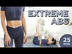 | Extreme Abs Workout | 25 Min At Home Upper Abs, Lower Abs, Obliques & Total Core Pilates Routine You guys!! I can't believe we hit 5 million!!! 10 years ago, I was uploading YouTube videos to just 40 of my students. NOW THERE'S 5 MILLION OF YOU?! From the bottom of my heart, thank you all for continuing to work out with me. Hope we can keep having fun together!
To celebrate, I put together the HARDEST, most insane ab workout EVER! It's a 5x5 workout, which means we're gonna do 5 rounds with 5 different moves in each round, each focusing on different abdominal muscles. That’s 25 different ab exercises in 25 minutes!
Round 1: UPPER ABS
1. HUNDREDS
2. TABLETOP CRUNCH
3. TOE TOUCHES
4. CRESCENT CRUNCH
5. BUTTERFLY CRUNCH
Round 2: LOWER ABS
1. DOUBLE LEG LIFTS
2. SINGLE LEG DROP
3. REVERSE CRUNCHES
4. FLUTTERS
5. DOUBLE D’S
Round 3: CENTER ABS
1. SINGLE STRAIGHT LEG STRETCH
2. DOUBLE LEG STRETCH
3. STAR ABS
4. EAGLE CRUNCH
5. SINGLE LEGGED JACKKNIFE
Round 4: OBLIQUES
1. CANDLESTICK DIPPER R
2. SIDE PLANK DIPPERS R
3. CANDLESTICK DIPPERS L
4. SIDE PLANK DIPPERS L
5. HIP TWIST BUTT UPS
Round 5: TOTAL CORE
1. ROLLOVERS
2. ROLL UP
3. SPRINTER
4. EARTHQUAKE
5. PLANK
Love you guys!!
P.S. I'm wearing my brand new POPFLEX set from the Terrain Collection!! Get yours at https://www.popflexactive.com/!
#abworkout #pilates #poppilates #blogilates #noequipmentworkout
Music is always from: http://share.epidemicsound.com/sgFTn
******
Cassey Ho is an award-winning fitness instructor, entrepreneur and online personality. As the creator behind Blogilates, the #1 female fitness channel on YouTube, she’s transformed millions of lives through helping them achieve their strength and weight-loss goals. She focuses on making fitness fun and the results are evident. Cassey's unique format, POP Pilates©, which launched as a workout video on YouTube in 2009, has become a live fitness class that can be taken at gyms all over the world with over 3,000 POP Pilates classes being taught monthly. Her authenticity continues to shine through, making her one of the most relatable fitness icons online and beyond. She's also the author of the best-selling book, Hot Body Year Round and is the designer of her own activewear line, POPFLEX.
With a wide range of free workout videos available, Cassey's channel focuses on ab exercises, butt & thigh exercises, arm exercises, pilates, cardio routines, fat burning workouts, high intensity interval training workouts (HIIT), stretching and flexibility routines and so much more!
***
DISCLAIMER:
Blogilates and oGorgeous Inc. strongly recommend that you consult with your physician before beginning any exercise program.
You should be in good physical condition and be able to participate in the exercise.
You should understand that when participating in any exercise or exercise program, there is the possibility of physical injury. If you engage in this exercise or exercise program, you agree that you do so at your own risk, are voluntarily participating in these activities, assume all risk of injury to yourself, and agree to release and discharge Blogilates and oGorgeous Inc. from any and all claims or causes of action, known or unknown, arising out of Blogilates' and oGorgeous Inc.'s negligence. 26 min - 23 Apr 2020 |
.jpg) | EXTREME ABS Workout Ready for the hardest ab workout of your life? No kidding. Let's sculpt some sexy abs right now. Ain't nobody said it was gonna be easy!! Read more at http://www.blogilates.com
♥ CHECK OUT MY DVD: http://www.poppilatesdvd.com
♥ INSPIRATIONAL SHIRTS: http://www.shopblogilates.com
♥ SUBSCRIBE: http://bit.ly/blogilatesyt
♥ BLOG: http://www.blogilates.com
♥ FB: http://www.facebook.com/blogilates
♥ TWEET: http://www.twitter.com/blogilates
♥ TUMBLR: http://www.blogilates.tumblr.com
♥ PINTEREST: http://pinterest.com/blogilates
♥ INSTAGRAM: http://www.instagram.com/blogilates
******
Cassey Ho is a certified Pilates and fitness instructor, named Greatist's Top 100 Health & Fitness Influencers in the World alongside Michelle Obama. She is the winner of the "Social Fitness" Shorty Award and FITNESS Magazine named her their "Best Healthy Living Blogger". She's been featured on Dr. Oz, EXTRA TV, The Steve Harvey Show, COSMPOLITAN Magazine, SHAPE Magazine, Ladies Home Journal, SELF Magazine, NY Times, LA Times, and many more.
***
DISCLAIMER:
Blogilates and oGorgeous Inc. strongly recommend that you consult with your physician before beginning any exercise program.
You should be in good physical condition and be able to participate in the exercise.
You should understand that when participating in any exercise or exercise program, there is the possibility of physical injury. If you engage in this exercise or exercise program, you agree that you do so at your own risk, are voluntarily participating in these activities, assume all risk of injury to yourself, and agree to release and discharge Blogilates and oGorgeous Inc. from any and all claims or causes of action, known or unknown, arising out of Blogilates' and oGorgeous Inc.'s negligence. 14 min - 7 Jul 2014 |
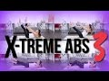 | EXTREME ABS 3! Intense at-home ab workout for flat abs! After releasing Extreme Abs and Extreme Abs 2, you've been craving the next level of abdominal sculpting torture and THIS IS IT! EXTREME ABS 3! The craziest at-home ab workout that will help bring out your muscle definition in your abs and also build a super strong core! Using no equipment, I will take you through an insane and effective Pilates ab routine that you've never experienced before.
♥ Get all my workout calendars and read my blog: http://www.blogilates.com
♥ Get the Blogilates App FREE in the App Store or Google Play Store!
♥ MY WATERBOTTLES & CUTE ACTIVEWEAR: http://www.blogilatesdesigns.com
♥ INSTAGRAM: @Blogilates
♥ SNAPCHAT: @Blogilates
♥ FACEBOOK: http://www.facebook.com/blogilates
♥ TWITTER: http://www.twitter.com/blogilates
******
Cassey Ho is an award-winning fitness instructor, entrepreneur and online personality. She is the creator of Blogilates, the #1 female fitness channel on Youtube. In a revolutionary partnership, Cassey's unique format, POP Pilates© which launched on Youtube in 2009, has become a live class that can be taken at every 24 Hr Fitness gym in the US. She's the author of the best-selling book, Hot Body Year Round and is the designer of her own activewear line.
***
DISCLAIMER:
Blogilates and oGorgeous Inc. strongly recommend that you consult with your physician before beginning any exercise program.
You should be in good physical condition and be able to participate in the exercise.
You should understand that when participating in any exercise or exercise program, there is the possibility of physical injury. If you engage in this exercise or exercise program, you agree that you do so at your own risk, are voluntarily participating in these activities, assume all risk of injury to yourself, and agree to release and discharge Blogilates and oGorgeous Inc. from any and all claims or causes of action, known or unknown, arising out of Blogilates' and oGorgeous Inc.'s negligence. 14 min - 28 Mar 2016 |
.jpg) | Extreme Ab Flattener | ADVANCED PILATES ABS WORKOUT You guys made it to your level 3 ab workout and this one is legit INSANE. I am so proud of you for making it here - two weeks ago you started with a 15 minute back-to-basics ab workout and now you're about to crush 30 minutes of pure ab fire!! Give yourself a round of applause after this one! üëè
Your moves are:
00:00 Intro
1:30 Hundreds (table top)
2:17 Hundreds (legs up)
3:04 L Hundred
3:38 Hundreds (legs up)
3:58 45 degree hundreds
4:15 Single leg stretch
4:42 Single straight leg stretch
5:14 Scissors
6:52 Roll up
7:26 Single leg jackknife
8:51 V-up
9:44 Teaser
10:28 Single leg drop
10:52 Double leg lift
11:52 Single leg lift
12:50 Double leg stretch
13:21 Double legs stretch flutter
13:50 Flutters
14:42 Heel reaches (table top)
15:21 Heel reaches (legs up)
15:48 Single heel reach
16:20 Heel reaches (legs up)
17:16 Candlestick dipper (arms up)
19:55 Candlestick dipper holds
20:25 Candlestick dipper (arms up)
23:40 Candlestick dipper holds
24:06 Plank
24:32 Plank knee taps
25:10 Plank
25:37 Balance plank
27:01 Hip twists
27:33 Butt ups
#abworkout #pilates #blogilates #blogilatesabs
Here is where I get all of my music! Epidemic Sound: http://share.epidemicsound.com/sgFTn
My outfit & yoga mat are from: http://www.popflexactive.com
******
Cassey Ho is an award-winning fitness instructor, entrepreneur and online personality. As the creator behind Blogilates, the #1 female fitness channel on YouTube, she’s transformed millions of lives through helping them achieve their strength and weight-loss goals. She focuses on making fitness fun and the results are evident. Cassey's unique format, POP Pilates©, which launched as a workout video on YouTube in 2009, has become a live fitness class that can be taken at gyms all over the world with over 3,000 POP Pilates classes being taught monthly. Her authenticity continues to shine through, making her one of the most relatable fitness icons online and beyond. She's also the author of the best-selling book, Hot Body Year Round and is the designer of her own activewear line, POPFLEX.
With a wide range of free workout videos available, Cassey's channel focuses on ab exercises, butt & thigh exercises, arm exercises, pilates, cardio routines, fat burning workouts, high intensity interval training workouts (HIIT), stretching and flexibility routines and so much more!
***
DISCLAIMER:
Blogilates and oGorgeous Inc. strongly recommend that you consult with your physician before beginning any exercise program.
You should be in good physical condition and be able to participate in the exercise.
You should understand that when participating in any exercise or exercise program, there is the possibility of physical injury. If you engage in this exercise or exercise program, you agree that you do so at your own risk, are voluntarily participating in these activities, assume all risk of injury to yourself, and agree to release and discharge Blogilates and oGorgeous Inc. from any and all claims or causes of action, known or unknown, arising out of Blogilates' and oGorgeous Inc.'s negligence. 33 min - 19 Jul 2020 |
.jpg) | INSANE Abs & Obliques Workout | At Home No Equipment Core & Muffintop Exercises My new luxury suede yoga mat is from: http://bit.ly/POPyogamat
Time to get your strongest abs and your sleekest obliques! Today we are working on your core which includes all the muscles around your waistline! You don't need to go to the gym or pay for a membership when you can do all your workouts from home. These ab flattening, core sculpting, muffintop melting moves will show you the results you want.
Here are your POP Pilates exercises:
1. Sit ups
2. Double leg lifts
3. Single Straight Leg Pulse
4. Cheerleader L's
5. Criss Cross
6. Double Leg Stretch
7. Hollow Rock
8. Cross Crunch
9. Cross Crunch Straight
10. Roll Up Reach
11. Earthquake
Here is where I get all of my music! Epidemic Sound: https://goo.gl/Nj4ZMg
My outfit & yoga mat are from: http://www.popflexactive.com
******
Cassey Ho is an award-winning fitness instructor, entrepreneur and online personality. As the creator behind Blogilates, the #1 female fitness channel on YouTube, she’s transformed millions of lives through helping them achieve their strength and weight-loss goals. She focuses on making fitness fun and the results are evident. Cassey's unique format, POP Pilates©, which launched as a workout video on YouTube in 2009, has become a live fitness class that can be taken at gyms all over the world with over 3,000 POP Pilates classes being taught monthly. Her authenticity continues to shine through, making her one of the most relatable fitness icons online and beyond. She's also the author of the best-selling book, Hot Body Year Round and is the designer of her own activewear line, POPFLEX.
With a wide range of free workout videos available, Cassey's channel focuses on ab exercises, butt & thigh exercises, arm exercises, pilates, cardio routines, fat burning workouts, high intensity interval training workouts (HIIT), stretching and flexibility routines and so much more!
***
DISCLAIMER:
Blogilates and oGorgeous Inc. strongly recommend that you consult with your physician before beginning any exercise program.
You should be in good physical condition and be able to participate in the exercise.
You should understand that when participating in any exercise or exercise program, there is the possibility of physical injury. If you engage in this exercise or exercise program, you agree that you do so at your own risk, are voluntarily participating in these activities, assume all risk of injury to yourself, and agree to release and discharge Blogilates and oGorgeous Inc. from any and all claims or causes of action, known or unknown, arising out of Blogilates' and oGorgeous Inc.'s negligence. 8 min - 18 Feb 2018 |
.jpg) | Intense Ab Mania Workout | POP Pilates Enjoy this ab crushing workout! It is my INTENSE AB MANIA routine - you will love it for your belly, obliques, and lower abs.
Congrats to the winners of the yoga mat giveaway! http://bit.ly/coutureyogamats
Kaleidoscope - Sarah K https://www.youtube.com/channel/UCCgboeq8FISd7ElFYOUNB3A
Peony Garden - TheFearlessRadio https://www.youtube.com/user/TheFearlessRadio
Sunset Festival - Shannan Goetsch https://www.youtube.com/channel/UCeNuJbF4DVDxhncPVr-fSog
So Many Succulents - Mizukuraiful https://www.youtube.com/user/Mizukuraiful
♥ I HAVE A NEW DVD: http://www.poppilatesdvd.com
♥ INSPIRATIONAL SHIRTS: http://www.shopblogilates.com
♥ SUBSCRIBE: http://bit.ly/blogilatesyt
♥ BLOG: http://www.blogilates.com
♥ FB: http://www.facebook.com/blogilates
♥ TWEET: http://www.twitter.com/blogilates
♥ TUMBLR: http://www.blogilates.tumblr.com
♥ PINTEREST: http://pinterest.com/blogilates
♥ INSTAGRAM: http://www.instagram.com/blogilates
******
Cassey Ho is a certified Pilates and fitness instructor, named Greatist's Top 25 Health & Fitness Influencers in the World alongside Michelle Obama. She is the winner of the "Social Fitness" Shorty Award and FITNESS Magazine named her their "Best Healthy Living Blogger". She's been featured on Dr. Oz, EXTRA TV, The Steve Harvey Show, COSMPOLITAN Magazine, SHAPE Magazine, Ladies Home Journal, SELF Magazine, NY Times, LA Times, and many more.
***
DISCLAIMER:
Blogilates and oGorgeous Inc. strongly recommend that you consult with your physician before beginning any exercise program.
You should be in good physical condition and be able to participate in the exercise.
You should understand that when participating in any exercise or exercise program, there is the possibility of physical injury. If you engage in this exercise or exercise program, you agree that you do so at your own risk, are voluntarily participating in these activities, assume all risk of injury to yourself, and agree to release and discharge Blogilates and oGorgeous Inc. from any and all claims or causes of action, known or unknown, arising out of Blogilates' and oGorgeous Inc.'s negligence. 15 min - 19 Oct 2015 |
Extreme Abs Workout 2 If you thought Extreme Abs was hard, wait til you try Extreme Abs 2. Pretty much the hardest ab workout of your life. I combined all of my fave ab chiseling exercises into one intense nonstop workout. Yup. You can thank me now :P
Try Extreme Abs 1: https://www.youtube.com/watch?v=xGWrjmoukpI
Oh and download the Blogilates App! It's free on iPhone and Android! Yay!
What do you think? Which one is harder?
Filmed and edited by Brad Etter.
♥ CHECK OUT MY DVD: http://www.poppilatesdvd.com
♥ INSPIRATIONAL SHIRTS: http://www.shopblogilates.com
♥ SUBSCRIBE: http://bit.ly/blogilatesyt
♥ BLOG: http://www.blogilates.com
♥ FB: http://www.facebook.com/blogilates
♥ TWEET: http://www.twitter.com/blogilates
♥ TUMBLR: http://www.blogilates.tumblr.com
♥ PINTEREST: http://pinterest.com/blogilates
♥ INSTAGRAM: http://www.instagram.com/blogilates
******
Cassey Ho is a certified Pilates and fitness instructor, named Greatist's Top 100 Health & Fitness Influencers in the World alongside Michelle Obama. She is the winner of the "Social Fitness" Shorty Award and FITNESS Magazine named her their "Best Healthy Living Blogger". She's been featured on Dr. Oz, EXTRA TV, The Steve Harvey Show, COSMPOLITAN Magazine, SHAPE Magazine, Ladies Home Journal, SELF Magazine, NY Times, LA Times, and many more.
***
DISCLAIMER:
Blogilates and oGorgeous Inc. strongly recommend that you consult with your physician before beginning any exercise program.
You should be in good physical condition and be able to participate in the exercise.
You should understand that when participating in any exercise or exercise program, there is the possibility of physical injury. If you engage in this exercise or exercise program, you agree that you do so at your own risk, are voluntarily participating in these activities, assume all risk of injury to yourself, and agree to release and discharge Blogilates and oGorgeous Inc. from any and all claims or causes of action, known or unknown, arising out of Blogilates' and oGorgeous Inc.'s negligence. 15 min - 29 Dec 2014 |
.jpg) | 20 Minute Abdominal Isolate Workout | At-home, no equipment exercises for flat abs! You guys, today's 20 minute Pilates ab workout is NO JOKE. Imagine my hardest ab workout videos all smooshed together into one supreme core crushing workout. And imagine it 20 FREAKING FULL LENGTH MINUTES LONG. Yup. You will have very sore and very toned abs after this. This is the ULTIMATE AB WORKOUT OF ALL TIME.
Your 20 ab flattening moves are:
1. Cross Kick Crunch (R)
2. Cross Kick Crunch (L)
3. Roll Ups
4. Single Leg Drop
5. Toe Touches
6. Criss Cross
7. Butterfly Cruch
8. Butterfly Situp
9. Double Leg Lift
10. Double Leg Stretch
11. Star Abs
12. Crescent Crunch
13. Russian Twist
14. Cha Cha Abs
15. Reverse Crunch
16. Rollovers
17. Reg. Crunch
18. Side Plank (R)
19. Side Plank (L)
20. Plank
Here is where I get all of my music! Epidemic Sound: http://share.epidemicsound.com/sgFTn
My outfit & yoga mat are from: http://www.popflexactive.com
******
Cassey Ho is an award-winning fitness instructor, entrepreneur and online personality. As the creator behind Blogilates, the #1 female fitness channel on YouTube, she’s transformed millions of lives through helping them achieve their strength and weight-loss goals. She focuses on making fitness fun and the results are evident. Cassey's unique format, POP Pilates©, which launched as a workout video on YouTube in 2009, has become a live fitness class that can be taken at gyms all over the world with over 3,000 POP Pilates classes being taught monthly. Her authenticity continues to shine through, making her one of the most relatable fitness icons online and beyond. She's also the author of the best-selling book, Hot Body Year Round and is the designer of her own activewear line, POPFLEX.
With a wide range of free workout videos available, Cassey's channel focuses on ab exercises, butt & thigh exercises, arm exercises, pilates, cardio routines, fat burning workouts, high intensity interval training workouts (HIIT), stretching and flexibility routines and so much more!
***
DISCLAIMER:
Blogilates and oGorgeous Inc. strongly recommend that you consult with your physician before beginning any exercise program.
You should be in good physical condition and be able to participate in the exercise.
You should understand that when participating in any exercise or exercise program, there is the possibility of physical injury. If you engage in this exercise or exercise program, you agree that you do so at your own risk, are voluntarily participating in these activities, assume all risk of injury to yourself, and agree to release and discharge Blogilates and oGorgeous Inc. from any and all claims or causes of action, known or unknown, arising out of Blogilates' and oGorgeous Inc.'s negligence. 25 min - 24 Mar 2019 |
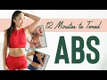 | 12 Minutes to Toned Abs Workout You guys, I wasn't lying when I said the 12 Minutes of Toned series would be INTENSE! We're just about to be halfway through and I know you're gonna love this one...
Today's all about the abs & obliques!!! Your moves are criss crosses, double leg lifts, table top crunches, eagle crunches, scissors, rollovers & a plank! Let's do this!!
Here is where I get all of my music! Epidemic Sound: http://share.epidemicsound.com/sgFTn
My yoga mat is from: http://www.popflexactive.com
******
Cassey Ho is an award-winning fitness instructor, entrepreneur and online personality. As the creator behind Blogilates, the #1 female fitness channel on YouTube, she’s transformed millions of lives through helping them achieve their strength and weight-loss goals. She focuses on making fitness fun and the results are evident. Cassey's unique format, POP Pilates©, which launched as a workout video on YouTube in 2009, has become a live fitness class that can be taken at gyms all over the world with over 3,000 POP Pilates classes being taught monthly. Her authenticity continues to shine through, making her one of the most relatable fitness icons online and beyond. She's also the author of the best-selling book, Hot Body Year Round and is the designer of her own activewear line, POPFLEX.
With a wide range of free workout videos available, Cassey's channel focuses on ab exercises, butt & thigh exercises, arm exercises, pilates, cardio routines, fat burning workouts, high intensity interval training workouts (HIIT), stretching and flexibility routines and so much more!
***
DISCLAIMER:
Blogilates and oGorgeous Inc. strongly recommend that you consult with your physician before beginning any exercise program.
You should be in good physical condition and be able to participate in the exercise.
You should understand that when participating in any exercise or exercise program, there is the possibility of physical injury. If you engage in this exercise or exercise program, you agree that you do so at your own risk, are voluntarily participating in these activities, assume all risk of injury to yourself, and agree to release and discharge Blogilates and oGorgeous Inc. from any and all claims or causes of action, known or unknown, arising out of Blogilates' and oGorgeous Inc.'s negligence. 15 min - 2 Feb 2020 |
.jpg) | The Best Abs Workout | POP Pilates Top TikTok Hits You guys, we're taking it back to my POP Pilates roots today with one of my favorite ab workouts EVER. No timer. No reps. We're just gonna have fun to the music. You ready? The moves are:
Tabletop Crunch
Legs Up Crunch
Punch N Crunch
Leg Outs
Star Abs
Flutters
Roll Ups
Cross Crunch
Criss Cross
Wiggle
Leg Outs
Russian Twists
Hip Twists
Dolphins
Plank
0:00 Intro
0:42 Say So by Doja Cat
4:45 Playdate by Melanie Martinez
7:48 Supalonely by Benee ft. Gus Dapperton
11:30 End This (L.O.V.E.) by Hailee Steinfeld
#abworkout #pilates #poppilates #blogilates #tiktok
Here is where I get all of my music! Epidemic Sound: http://share.epidemicsound.com/sgFTn
My outfit & yoga mat are from: http://www.popflexactive.com
******
Cassey Ho is an award-winning fitness instructor, entrepreneur and online personality. As the creator behind Blogilates, the #1 female fitness channel on YouTube, she’s transformed millions of lives through helping them achieve their strength and weight-loss goals. She focuses on making fitness fun and the results are evident. Cassey's unique format, POP Pilates©, which launched as a workout video on YouTube in 2009, has become a live fitness class that can be taken at gyms all over the world with over 3,000 POP Pilates classes being taught monthly. Her authenticity continues to shine through, making her one of the most relatable fitness icons online and beyond. She's also the author of the best-selling book, Hot Body Year Round and is the designer of her own activewear line, POPFLEX.
With a wide range of free workout videos available, Cassey's channel focuses on ab exercises, butt & thigh exercises, arm exercises, pilates, cardio routines, fat burning workouts, high intensity interval training workouts (HIIT), stretching and flexibility routines and so much more!
***
DISCLAIMER:
Blogilates and oGorgeous Inc. strongly recommend that you consult with your physician before beginning any exercise program.
You should be in good physical condition and be able to participate in the exercise.
You should understand that when participating in any exercise or exercise program, there is the possibility of physical injury. If you engage in this exercise or exercise program, you agree that you do so at your own risk, are voluntarily participating in these activities, assume all risk of injury to yourself, and agree to release and discharge Blogilates and oGorgeous Inc. from any and all claims or causes of action, known or unknown, arising out of Blogilates' and oGorgeous Inc.'s negligence. 16 min - 7 Jun 2020 |
.jpg) | 1000 Abs Challenge OH. EM. GEE. Today you and I are doing 1000 reps of the best ab flattening, core strengthening abdominal exercises ever. 10 moves, 100 reps each. By the end, your abs will be SHREDDED. Ready to take this on? It aint no easy feat. Let's do it. #1000abchallenge
♥ I HAVE A NEW DVD: http://www.poppilatesdvd.com
♥ INSPIRATIONAL SHIRTS: http://www.shopblogilates.com
♥ SUBSCRIBE: http://bit.ly/blogilatesyt
♥ BLOG: http://www.blogilates.com
♥ FB: http://www.facebook.com/blogilates
♥ TWEET: http://www.twitter.com/blogilates
♥ TUMBLR: http://www.blogilates.tumblr.com
♥ PINTEREST: http://pinterest.com/blogilates
♥ INSTAGRAM: http://www.instagram.com/blogilates
******
Cassey Ho is a certified Pilates and fitness instructor, named Greatist's Top 25 Health & Fitness Influencers in the World alongside Michelle Obama. She is the winner of the "Social Fitness" Shorty Award and FITNESS Magazine named her their "Best Healthy Living Blogger". She's been featured on Dr. Oz, EXTRA TV, The Steve Harvey Show, COSMPOLITAN Magazine, SHAPE Magazine, Ladies Home Journal, SELF Magazine, NY Times, LA Times, and many more.
***
DISCLAIMER:
Blogilates and oGorgeous Inc. strongly recommend that you consult with your physician before beginning any exercise program.
You should be in good physical condition and be able to participate in the exercise.
You should understand that when participating in any exercise or exercise program, there is the possibility of physical injury. If you engage in this exercise or exercise program, you agree that you do so at your own risk, are voluntarily participating in these activities, assume all risk of injury to yourself, and agree to release and discharge Blogilates and oGorgeous Inc. from any and all claims or causes of action, known or unknown, arising out of Blogilates' and oGorgeous Inc.'s negligence. 29 min - 8 Jun 2015 |
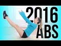 | The ULTIMATE 2016 AB WORKOUT! Get my workout calendar: http://www.blogilates.com Starting off the year STRONG with this KICK ABS Workout! We're doing 20 reps and 16 reps of the following moves in this fun, ab sculpting combo:
1. Scissors Kicks x 20
2. Ballerina Situp x 16
3. Corkscrew x 20
4. Ballerina Situp x 16
5. Cha Cha Abs x 20
6. Ballerina Situp x 16
7. Double Leg Lifts x 20
8. Ballerina Situp x 16
9. Teaser x 20 sec
10. Ballerina Situp x 16
Subscribe to my newsletter! http://bit.ly/blogilatesnewsletter
♥ Get my DVD: http://www.poppilatesdvd.com
♥ Cute waterbottles and workout clothes: http://www.shopblogilates.com
♥ SUBSCRIBE: http://bit.ly/blogilatesyt
♥ BLOG: http://www.blogilates.com
♥ FB: http://www.facebook.com/blogilates
♥ TWEET: http://www.twitter.com/blogilates
♥ TUMBLR: http://www.blogilates.tumblr.com
♥ PINTEREST: http://pinterest.com/blogilates
♥ INSTAGRAM: http://www.instagram.com/blogilates
******
Cassey Ho is a certified Pilates and fitness instructor, named Greatist's Top 25 Health & Fitness Influencers in the World alongside Michelle Obama. She is the winner of the "Social Fitness" Shorty Award and FITNESS Magazine named her their "Best Healthy Living Blogger". She's been featured on Dr. Oz, EXTRA TV, The Steve Harvey Show, COSMPOLITAN Magazine, SHAPE Magazine, Ladies Home Journal, SELF Magazine, NY Times, LA Times, and many more.
***
DISCLAIMER:
Blogilates and oGorgeous Inc. strongly recommend that you consult with your physician before beginning any exercise program.
You should be in good physical condition and be able to participate in the exercise.
You should understand that when participating in any exercise or exercise program, there is the possibility of physical injury. If you engage in this exercise or exercise program, you agree that you do so at your own risk, are voluntarily participating in these activities, assume all risk of injury to yourself, and agree to release and discharge Blogilates and oGorgeous Inc. from any and all claims or causes of action, known or unknown, arising out of Blogilates' and oGorgeous Inc.'s negligence. 13 min - 3 Jan 2016 |
.jpg) | 10 Minute Lower Ab Flattener | Total Body Transformation Workout Welcome to your Total Body Transformation!!! Over the next 6 weeks, we're gonna target ALL the major muscles in your body in a way that will make you feel stronger every week.
March workout calendar: https://www.blogilates.com/march-2020-workout-calendar/
I'm really excited about this series because this is the time of year when we're just ready to switch up our workout routines!! I'm gonna tell you EXACTLY what to do every day this month, so it'll basically be like I am your personal trainer. The link to the March workout calendar is above!
You have 8 lower ab moves today, and we'll do each for 1 minute with a 15 second break in between. They are:
1. Double Leg Stretch
2. Expanding Tabletops (R)
3. Expanding Tabletops (L)
4. Reverse Crunch
5. Double Leg Lift
6. Double Ds
7. Rollovers
8. Flutters
Workout starts at 3:13!
Here is where I get all of my music! Epidemic Sound: http://share.epidemicsound.com/sgFTn
******
Cassey Ho is an award-winning fitness instructor, entrepreneur and online personality. As the creator behind Blogilates, the #1 female fitness channel on YouTube, she’s transformed millions of lives through helping them achieve their strength and weight-loss goals. She focuses on making fitness fun and the results are evident. Cassey's unique format, POP Pilates©, which launched as a workout video on YouTube in 2009, has become a live fitness class that can be taken at gyms all over the world with over 3,000 POP Pilates classes being taught monthly. Her authenticity continues to shine through, making her one of the most relatable fitness icons online and beyond. She's also the author of the best-selling book, Hot Body Year Round and is the designer of her own activewear line, POPFLEX.
With a wide range of free workout videos available, Cassey's channel focuses on ab exercises, butt & thigh exercises, arm exercises, pilates, cardio routines, fat burning workouts, high intensity interval training workouts (HIIT), stretching and flexibility routines and so much more!
***
DISCLAIMER:
Blogilates and oGorgeous Inc. strongly recommend that you consult with your physician before beginning any exercise program.
You should be in good physical condition and be able to participate in the exercise.
You should understand that when participating in any exercise or exercise program, there is the possibility of physical injury. If you engage in this exercise or exercise program, you agree that you do so at your own risk, are voluntarily participating in these activities, assume all risk of injury to yourself, and agree to release and discharge Blogilates and oGorgeous Inc. from any and all claims or causes of action, known or unknown, arising out of Blogilates' and oGorgeous Inc.'s negligence. 16 min - 1 Mar 2020 |
.jpg) | Perfect 10 Abs! Do these 10 ab exercises together for the best core tightening, ab flattening combo! I suggest you do this workout once a day, every day after your workout - be it weight lifting, cardio, HIIT - this is the perfect way to end your workout routine.
My yoga mat: http://www.ogorgeous.com/product/so-many-succulents-yoga-mat
♥ I HAVE A NEW DVD: http://www.poppilatesdvd.com
♥ INSPIRATIONAL SHIRTS: http://www.shopblogilates.com
♥ SUBSCRIBE: http://bit.ly/blogilatesyt
♥ BLOG: http://www.blogilates.com
♥ FB: http://www.facebook.com/blogilates
♥ TWEET: http://www.twitter.com/blogilates
♥ TUMBLR: http://www.blogilates.tumblr.com
♥ PINTEREST: http://pinterest.com/blogilates
♥ INSTAGRAM: http://www.instagram.com/blogilates
******
Cassey Ho is a certified Pilates and fitness instructor, named Greatist's Top 25 Health & Fitness Influencers in the World alongside Michelle Obama. She is the winner of the "Social Fitness" Shorty Award and FITNESS Magazine named her their "Best Healthy Living Blogger". She's been featured on Dr. Oz, EXTRA TV, The Steve Harvey Show, COSMPOLITAN Magazine, SHAPE Magazine, Ladies Home Journal, SELF Magazine, NY Times, LA Times, and many more.
***
DISCLAIMER:
Blogilates and oGorgeous Inc. strongly recommend that you consult with your physician before beginning any exercise program.
You should be in good physical condition and be able to participate in the exercise.
You should understand that when participating in any exercise or exercise program, there is the possibility of physical injury. If you engage in this exercise or exercise program, you agree that you do so at your own risk, are voluntarily participating in these activities, assume all risk of injury to yourself, and agree to release and discharge Blogilates and oGorgeous Inc. from any and all claims or causes of action, known or unknown, arising out of Blogilates' and oGorgeous Inc.'s negligence. 10 min - 9 Nov 2015 |
.jpg) | Total Ab Workout | 5 Moves to Your Fittest Core Today we are doing the 5 most effective exercises for your strongest and fittest core ever. A strong core not only helps give you defined abs, but it helps improve your posture and confidence! These moves will work your upper and lower abs, and obliques while focusing on mind-muscle connection and control. This is a great workout for all fitness levels because I provide modifications as you continue to build up your strength and endurance. Oh boy, your abs will be popping after this routine!
Here are the moves:
1. Star Abs
2. Single Leg Jackknives
3. Double Leg Lifts
4. Punch Crunch
5. Earthquake
♥ Get all my workout calendars and read my blog: http://www.blogilates.com
♥ MY ACTIVEWEAR: http://www.popflexactive.com
♥ Get the Blogilates App FREE in the App Store or Google Play Store!
♥ INSTAGRAM: http://www.instagram.com/Blogilates
♥ SNAPCHAT: https://snapchat.com/add/blogilates
♥ FACEBOOK: http://www.facebook.com/blogilates
♥ TWITTER: http://www.twitter.com/blogilates
******
Cassey Ho is an award-winning fitness instructor, entrepreneur and online personality. She is the creator of Blogilates, the #1 female fitness channel on Youtube. In a revolutionary partnership, Cassey's unique format, POP Pilates© which launched on Youtube in 2009, has become a live class that can be taken at every 24 Hr Fitness gym in the US. She's the author of the best-selling book, Hot Body Year Round and is the designer of her own activewear line, POPFLEX.
***
DISCLAIMER:
Blogilates and oGorgeous Inc. strongly recommend that you consult with your physician before beginning any exercise program.
You should be in good physical condition and be able to participate in the exercise.
You should understand that when participating in any exercise or exercise program, there is the possibility of physical injury. If you engage in this exercise or exercise program, you agree that you do so at your own risk, are voluntarily participating in these activities, assume all risk of injury to yourself, and agree to release and discharge Blogilates and oGorgeous Inc. from any and all claims or causes of action, known or unknown, arising out of Blogilates' and oGorgeous Inc.'s negligence. 8 min - 9 Apr 2017 |
Core Chiseler | INTERMEDIATE PILATES ABS WORKOUT Ready for your level 2 ab chisel?! Today's intermediate pilates abs video takes the moves we perfected last week and makes them EVEN HARDER!!! This workout is a little more intense than last week's and you are gonna LOVE IT! Your moves are:
00:00 Intro
1:22 Hundreds (tabletop)
1:55 Hundreds (legs up)
2:47 Single Leg Stretch
3:36 Single Straight Leg Stretch
4:41 Roll Up
5:50 Single Leg Jackknife
6:59 Double Leg Stretch
7:41 Double Leg Stretch Flutter
9:07 Single Leg Drop
9:53 Double Leg Lift
10:58 Heel Reaches (tabletop)
11:24 Heel Reaches (heads up)
12:20 Candlestick Dipper (arms up)
15:30 Plank
16:18 Knee Tap Planks
17:10 Double Knee Taps
18:06 Hip Twists
#abworkout #pilates #blogilates #blogilatesabs
Here is where I get all of my music! Epidemic Sound: http://share.epidemicsound.com/sgFTn
My outfit & yoga mat are from: http://www.popflexactive.com
******
Cassey Ho is an award-winning fitness instructor, entrepreneur and online personality. As the creator behind Blogilates, the #1 female fitness channel on YouTube, she’s transformed millions of lives through helping them achieve their strength and weight-loss goals. She focuses on making fitness fun and the results are evident. Cassey's unique format, POP Pilates©, which launched as a workout video on YouTube in 2009, has become a live fitness class that can be taken at gyms all over the world with over 3,000 POP Pilates classes being taught monthly. Her authenticity continues to shine through, making her one of the most relatable fitness icons online and beyond. She's also the author of the best-selling book, Hot Body Year Round and is the designer of her own activewear line, POPFLEX.
With a wide range of free workout videos available, Cassey's channel focuses on ab exercises, butt & thigh exercises, arm exercises, pilates, cardio routines, fat burning workouts, high intensity interval training workouts (HIIT), stretching and flexibility routines and so much more!
***
DISCLAIMER:
Blogilates and oGorgeous Inc. strongly recommend that you consult with your physician before beginning any exercise program.
You should be in good physical condition and be able to participate in the exercise.
You should understand that when participating in any exercise or exercise program, there is the possibility of physical injury. If you engage in this exercise or exercise program, you agree that you do so at your own risk, are voluntarily participating in these activities, assume all risk of injury to yourself, and agree to release and discharge Blogilates and oGorgeous Inc. from any and all claims or causes of action, known or unknown, arising out of Blogilates' and oGorgeous Inc.'s negligence. 22 min - 12 Jul 2020 |
Abs On Fire | POP Pilates ABS! Please print the free calendar to know how to pair your workouts everyday for the best results! http://www.bit.ly/juneonfire Beginners, please print this calendar to get started: http://www.bit.ly/beginnerscalendar
♥ CHECK OUT MY DVD: http://www.poppilatesdvd.com
♥ INSPIRATIONAL SHIRTS: http://www.shopblogilates.com
♥ BLOG: http://www.blogilates.com
♥ FB: http://www.facebook.com/blogilates
♥ TWEET: http://www.twitter.com/blogilates
♥ TUMBLR: http://www.blogilates.tumblr.com
♥ PINTEREST: http://pinterest.com/blogilates
♥ INSTAGRAM: http://web.stagram.com/n/blogilates/
*****
Cassey Ho is a certified Pilates and fitness instructor, winner of YouTube Next Trainer, and was also recently named FITNESS Magazine's Best Healthy Living Blogger. 13 min - 4 Jun 2013 |
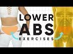 | 5 Lower Ab Isolation Exercises That Will Make Your Lower Belly Fat Cry Why does it feel like body fat just goes straight to the lower belly? Like, why can't just a tiny bit go to the booty?? Well, I'm about to drop some knowledge on ya! It's not just what you eat that affects those levels of fat, it's also the amount of sleep you get AND how stressed you are feeling. Lack of sleep and stress can increase your cortisol hormone levels and oddly, that can contribute to an increase in lower belly fat.
These five lower ab exercises are JUST what you need if you want to attack the lower belly pooch area (plus more sleep and less stress)!! They isolate your lower abdominals to really blast that belly fat! You can do this whole workout ANYWHERE, no weights required!!
1. Crunched heel taps x 1:30
2. Little U's x 1:30
3. Single leg drop x 1:30
4. Heel push abs x 1:30
5. Reverse double leg lift x 1:30
Workout starts at 1:42!
#abworkout #abs #workout
Here is where I get all of my music! Epidemic Sound: https://goo.gl/Nj4ZMg
My outfit & yoga mat are from: http://www.popflexactive.com
******
Cassey Ho is an award-winning fitness instructor, entrepreneur and online personality. As the creator behind Blogilates, the #1 female fitness channel on YouTube, she’s transformed millions of lives through helping them achieve their strength and weight-loss goals. She focuses on making fitness fun and the results are evident. Cassey's unique format, POP Pilates©, which launched as a workout video on YouTube in 2009, has become a live fitness class that can be taken at gyms all over the world with over 3,000 POP Pilates classes being taught monthly. Her authenticity continues to shine through, making her one of the most relatable fitness icons online and beyond. She's also the author of the best-selling book, Hot Body Year Round and is the designer of her own activewear line, POPFLEX.
With a wide range of free workout videos available, Cassey's channel focuses on ab exercises, butt & thigh exercises, arm exercises, pilates, cardio routines, fat burning workouts, high intensity interval training workouts (HIIT), stretching and flexibility routines and so much more!
***
DISCLAIMER:
Blogilates and oGorgeous Inc. strongly recommend that you consult with your physician before beginning any exercise program.
You should be in good physical condition and be able to participate in the exercise.
You should understand that when participating in any exercise or exercise program, there is the possibility of physical injury. If you engage in this exercise or exercise program, you agree that you do so at your own risk, are voluntarily participating in these activities, assume all risk of injury to yourself, and agree to release and discharge Blogilates and oGorgeous Inc. from any and all claims or causes of action, known or unknown, arising out of Blogilates' and oGorgeous Inc.'s negligence. 11 min - 9 Sep 2018 |
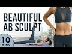 | 10 Minute Beautiful Ab Sculpt Pilates Workout | 7 Day Ab Challenge I want you to join me for the #7DayAbChallenge. https://www.blogilates.com/7-day-ab-challenge-2020/. In 30 minutes a day, we will be building our ab muscles, melting belly fat, and getting stronger!!
Now that it's Day 4, we're going to add our tummy toning workout every day:
BEAUTIFUL AB SCULPT PILATES
1. Legs up crunches
2. Alt. single leg drops
3. Roll ups
4. Alt. single leg drops
5. Eagle Crunches
We'll do each move for 1 minute with a super quick break in between. Let's do this!!!
Download the full challenge graphic: https://www.blogilates.com/7-day-ab-challenge-2020/
Day 1
Waist Whittler Cardio Pilates (20 min): https://youtu.be/LzYAgCw-_B0
Day 2
Waist Whittler Cardio Pilates (20 min): https://youtu.be/LzYAgCw-_B0
Day 3
Waist Whittler Cardio Pilates (20 min): https://youtu.be/LzYAgCw-_B0
Day 4
Waist Whittler Cardio Pilates (20 min): https://youtu.be/LzYAgCw-_B0
Beautiful Ab Sculpt (10 min): https://youtu.be/9wxVX1jn_YU
Day 5
Waist Whittler Cardio Pilates (20 min): https://youtu.be/LzYAgCw-_B0
Beautiful Ab Sculpt (10 min): https://youtu.be/9wxVX1jn_YU
Day 6
Waist Whittler Cardio Pilates (20 min): https://youtu.be/LzYAgCw-_B0
Beautiful Ab Sculpt (10 min): https://youtu.be/9wxVX1jn_YU
Day 7
Waist Whittler Cardio Pilates (20 min): https://youtu.be/LzYAgCw-_B0
Beautiful Ab Sculpt (10 min): https://youtu.be/9wxVX1jn_YU
#abworkout #pilates #poppilates #blogilates #challenge
Here is where I get all of my music! Epidemic Sound: http://share.epidemicsound.com/sgFTn
My outfit & yoga mat are from: http://www.popflexactive.com
******
Cassey Ho is an award-winning fitness instructor, entrepreneur and online personality. As the creator behind Blogilates, the #1 female fitness channel on YouTube, she’s transformed millions of lives through helping them achieve their strength and weight-loss goals. She focuses on making fitness fun and the results are evident. Cassey's unique format, POP Pilates©, which launched as a workout video on YouTube in 2009, has become a live fitness class that can be taken at gyms all over the world with over 3,000 POP Pilates classes being taught monthly. Her authenticity continues to shine through, making her one of the most relatable fitness icons online and beyond. She's also the author of the best-selling book, Hot Body Year Round and is the designer of her own activewear line, POPFLEX.
With a wide range of free workout videos available, Cassey's channel focuses on ab exercises, butt & thigh exercises, arm exercises, pilates, cardio routines, fat burning workouts, high intensity interval training workouts (HIIT), stretching and flexibility routines and so much more!
***
DISCLAIMER:
Blogilates and oGorgeous Inc. strongly recommend that you consult with your physician before beginning any exercise program.
You should be in good physical condition and be able to participate in the exercise.
You should understand that when participating in any exercise or exercise program, there is the possibility of physical injury. If you engage in this exercise or exercise program, you agree that you do so at your own risk, are voluntarily participating in these activities, assume all risk of injury to yourself, and agree to release and discharge Blogilates and oGorgeous Inc. from any and all claims or causes of action, known or unknown, arising out of Blogilates' and oGorgeous Inc.'s negligence. 14 min - 6 May 2020 |
Extreme Muffintop Crushing Workout! I just put together the hardest side shaping, oblique toning, muffintop killing workout routine ever! You need to try this now! See if you can keep up!
♥ CHECK OUT MY DVD: http://www.poppilatesdvd.com
♥ INSPIRATIONAL SHIRTS: http://www.shopblogilates.com
♥ SUBSCRIBE: http://bit.ly/blogilatesyt
♥ BLOG: http://www.blogilates.com
♥ FB: http://www.facebook.com/blogilates
♥ TWEET: http://www.twitter.com/blogilates
♥ TUMBLR: http://www.blogilates.tumblr.com
♥ PINTEREST: http://pinterest.com/blogilates
♥ INSTAGRAM: http://www.instagram.com/blogilates
******
Cassey Ho is a certified Pilates and fitness instructor, named Greatist's Top 100 Health & Fitness Influencers in the World alongside Michelle Obama. She is the winner of the "Social Fitness" Shorty Award and FITNESS Magazine named her their "Best Healthy Living Blogger". She's been featured on Dr. Oz, EXTRA TV, The Steve Harvey Show, COSMPOLITAN Magazine, SHAPE Magazine, Ladies Home Journal, SELF Magazine, NY Times, LA Times, and many more.
***
DISCLAIMER:
Blogilates and oGorgeous Inc. strongly recommend that you consult with your physician before beginning any exercise program.
You should be in good physical condition and be able to participate in the exercise.
You should understand that when participating in any exercise or exercise program, there is the possibility of physical injury. If you engage in this exercise or exercise program, you agree that you do so at your own risk, are voluntarily participating in these activities, assume all risk of injury to yourself, and agree to release and discharge Blogilates and oGorgeous Inc. from any and all claims or causes of action, known or unknown, arising out of Blogilates' and oGorgeous Inc.'s negligence. 9 min - 8 Feb 2015 |
.jpg) | POP Pilates: Intense Ab Workout! (Full 10 min) http://www.ogorgeous.com This one will TRULY challenge your upper, lower, and transverse abs and help get rid of that belly pooch, so do it now!
Cassey Ho is a fun Pilates Instructor who loves mixing up her moves to upbeat pop music.
Songs in this workout:
"Harder, Better, Faster, Stronger" by Daft Punk
"Da Funk" by Daft Punk
"Wildcat" by Ratatat
------
♥ GET MY DVD: http://www.poppilatesdvd.com ♥
Follow me on Twitter: http://www.twitter.com/blogilates
Read my Blogilates: http://blogilates.tumblr.com/
Join me on Facebook: http://facebook.com/ogorgeous 11 min - 9 Aug 2010 |
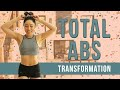 | 10 Minute Ab & Oblique Sculpter | Total Body Transformation Workout Have you heard of 11 abs? It's those two lines in the center of super chiseled abs, and that's what we're working toward in today's Total Body Transformation workout! This means targeting those middle abs and transverse abdominals.
Last week's weighted arm workout inspired me to do something I've NEVER done before... a weighted ab routine!! Don't forget - this video can still be done without a weight or with any object you have laying around like a book or can of soup!
You have 8 ab moves today. We'll do each for 1 minute with a 15 second break in between. They are:
1. Twisting Crunch (R)
2. Twisting Crunch (L)
3. One Arm Roll Up (R)
4. One Arm Roll Up (L)
5. Boat Infinities
6. Twisting Side Plank (R)
7. Twisting Side Plank (L)
8. Shoulder Tap Plank
Workout starts at 2:23!
March workout calendar: https://www.blogilates.com/march-2020-workout-calendar/
Here is where I get all of my music! Epidemic Sound: http://share.epidemicsound.com/sgFTn
My outfit & yoga mat are from: http://www.popflexactive.com
******
Cassey Ho is an award-winning fitness instructor, entrepreneur and online personality. As the creator behind Blogilates, the #1 female fitness channel on YouTube, she’s transformed millions of lives through helping them achieve their strength and weight-loss goals. She focuses on making fitness fun and the results are evident. Cassey's unique format, POP Pilates©, which launched as a workout video on YouTube in 2009, has become a live fitness class that can be taken at gyms all over the world with over 3,000 POP Pilates classes being taught monthly. Her authenticity continues to shine through, making her one of the most relatable fitness icons online and beyond. She's also the author of the best-selling book, Hot Body Year Round and is the designer of her own activewear line, POPFLEX.
With a wide range of free workout videos available, Cassey's channel focuses on ab exercises, butt & thigh exercises, arm exercises, pilates, cardio routines, fat burning workouts, high intensity interval training workouts (HIIT), stretching and flexibility routines and so much more!
***
DISCLAIMER:
Blogilates and oGorgeous Inc. strongly recommend that you consult with your physician before beginning any exercise program.
You should be in good physical condition and be able to participate in the exercise.
You should understand that when participating in any exercise or exercise program, there is the possibility of physical injury. If you engage in this exercise or exercise program, you agree that you do so at your own risk, are voluntarily participating in these activities, assume all risk of injury to yourself, and agree to release and discharge Blogilates and oGorgeous Inc. from any and all claims or causes of action, known or unknown, arising out of Blogilates' and oGorgeous Inc.'s negligence. 14 min - 22 Mar 2020 |
.jpg) | Intense Ab Burn // PIIT Join the PIIT28 Challenge at http://www.piit28.com
What's better than burning fat and getting a rock solid core at the same time in a QUICK and FUN PIIT routine? Pilates Intense Interval training is my latest program for those of you who crave something more sweat-inducing but still has the flavor of POP Pilates.
It's 7 moves. 45 sec on and 15 sec off. Let's go.
♥ Get all my workout calendars and read my blog: http://www.blogilates.com
♥ Get the Blogilates App FREE in the App Store or Google Play Store!
♥ MY WATERBOTTLES & CUTE ACTIVEWEAR: http://www.blogilatesdesigns.com
♥ INSTAGRAM: @Blogilates
♥ FB: http://www.facebook.com/blogilates
♥ TWITTER: http://www.twitter.com/blogilates
******
Cassey Ho is an award-winning fitness instructor, entrepreneur and online personality. She is the creator of Blogilates, the #1 female fitness channel on Youtube. In a revolutionary partnership, Cassey's unique format, POP Pilates© which launched on Youtube in 2009, has become a live class that can be taken at every 24 Hr Fitness gym in the US. She's the author of the best-selling book, Hot Body Year Round and is the designer of her own activewear line.
***
DISCLAIMER:
Blogilates and oGorgeous Inc. strongly recommend that you consult with your physician before beginning any exercise program.
You should be in good physical condition and be able to participate in the exercise.
You should understand that when participating in any exercise or exercise program, there is the possibility of physical injury. If you engage in this exercise or exercise program, you agree that you do so at your own risk, are voluntarily participating in these activities, assume all risk of injury to yourself, and agree to release and discharge Blogilates and oGorgeous Inc. from any and all claims or causes of action, known or unknown, arising out of Blogilates' and oGorgeous Inc.'s negligence. 10 min - 31 Jan 2016 |
.jpg) | 5 Minute Flat Abs! 5 min. 5 moves. 1 min each. Let's get your flat abs! This is a super short but intense abdominal workout. Comment below with your favorite move!
Get my first ever book: http://www.hotbodybook.com Really appreciate your support!!
♥ I HAVE A NEW DVD: http://www.poppilatesdvd.com
♥ INSPIRATIONAL SHIRTS: http://www.blogilatesdesigns.com
♥ SUBSCRIBE: http://bit.ly/blogilatesyt
♥ BLOG: http://www.blogilates.com
♥ FB: http://www.facebook.com/blogilates
♥ TWEET: http://www.twitter.com/blogilates
♥ TUMBLR: http://www.blogilates.tumblr.com
♥ PINTEREST: http://pinterest.com/blogilates
♥ INSTAGRAM: http://www.instagram.com/blogilates
******
Cassey Ho is a certified Pilates and fitness instructor, named Greatist's Top 25 Health & Fitness Influencers in the World alongside Michelle Obama. She is the winner of the "Social Fitness" Shorty Award and FITNESS Magazine named her their "Best Healthy Living Blogger". She's been featured on Dr. Oz, EXTRA TV, The Steve Harvey Show, COSMPOLITAN Magazine, SHAPE Magazine, Ladies Home Journal, SELF Magazine, NY Times, LA Times, and many more.
***
DISCLAIMER:
Blogilates and oGorgeous Inc. strongly recommend that you consult with your physician before beginning any exercise program.
You should be in good physical condition and be able to participate in the exercise.
You should understand that when participating in any exercise or exercise program, there is the possibility of physical injury. If you engage in this exercise or exercise program, you agree that you do so at your own risk, are voluntarily participating in these activities, assume all risk of injury to yourself, and agree to release and discharge Blogilates and oGorgeous Inc. from any and all claims or causes of action, known or unknown, arising out of Blogilates' and oGorgeous Inc.'s negligence. 7 min - 9 Mar 2015 |
.jpg) | 3 Minute LOWER ABS | POP Pilates Turbo Time to KILL your lower belly pooch with this quick 3 min workout! 7 POP Pilates moves, 30 seconds each, nonstop, no breaks. Ready? GO.
Download the free go90 app to watch my new series, Be Transformed!
iTunes: https://itunes.apple.com/app/id1036435323
Google Play Store: http://play.google.com/store/apps/details?id=com.verizonmedia.go90.enterprise
♥ I HAVE A NEW DVD: http://www.poppilatesdvd.com
♥ INSPIRATIONAL SHIRTS: http://www.shopblogilates.com
♥ SUBSCRIBE: http://bit.ly/blogilatesyt
♥ BLOG: http://www.blogilates.com
♥ FB: http://www.facebook.com/blogilates
♥ TWEET: http://www.twitter.com/blogilates
♥ TUMBLR: http://www.blogilates.tumblr.com
♥ PINTEREST: http://pinterest.com/blogilates
♥ INSTAGRAM: http://www.instagram.com/blogilates
******
Cassey Ho is a certified Pilates and fitness instructor, named Greatist's Top 25 Health & Fitness Influencers in the World alongside Michelle Obama. She is the winner of the "Social Fitness" Shorty Award and FITNESS Magazine named her their "Best Healthy Living Blogger". She's been featured on Dr. Oz, EXTRA TV, The Steve Harvey Show, COSMPOLITAN Magazine, SHAPE Magazine, Ladies Home Journal, SELF Magazine, NY Times, LA Times, and many more.
***
DISCLAIMER:
Blogilates and oGorgeous Inc. strongly recommend that you consult with your physician before beginning any exercise program.
You should be in good physical condition and be able to participate in the exercise.
You should understand that when participating in any exercise or exercise program, there is the possibility of physical injury. If you engage in this exercise or exercise program, you agree that you do so at your own risk, are voluntarily participating in these activities, assume all risk of injury to yourself, and agree to release and discharge Blogilates and oGorgeous Inc. from any and all claims or causes of action, known or unknown, arising out of Blogilates' and oGorgeous Inc.'s negligence. 6 min - 5 Oct 2015 |
20 Minute Waist Shaping Workout | at home exercises for sleek obliques Get ready for the ultimate 20 minute oblique workout to whittle your waist and shape your figure! Your obliques will be feeling it from all of these side body exercises that will accentuate the natural shape of your waistline!
So forget those waist shaping, waist trainer corset things. This is the real deal. If you wait a tight tummy, toned abs, and sleek obliques, do this workout video to get the results you want!
Your oblique workout:
Ankle Reaches
Wiggles
Side Plank Dipper (right)
Side Plank (right)
Side Plank Dippers (left)
Side Plank (left)
Candlestick Dipper (right)
Candlestick Dipper (left)
Hip Twists
Side Seals (right)
Accordion (right)
Side Seals (left)
Accordion (left)
Twisted Crunch (right)
Twisted Crunch (left)
Windmill
Corkscrew
Russian Twists
Ballerina Twist (right)
Ballerina Twist (left)
Here is where I get all of my music! Epidemic Sound: http://share.epidemicsound.com/sgFTn
My outfit & yoga mat are from: http://www.popflexactive.com
******
Cassey Ho is an award-winning fitness instructor, entrepreneur and online personality. As the creator behind Blogilates, the #1 female fitness channel on YouTube, she’s transformed millions of lives through helping them achieve their strength and weight-loss goals. She focuses on making fitness fun and the results are evident. Cassey's unique format, POP Pilates©, which launched as a workout video on YouTube in 2009, has become a live fitness class that can be taken at gyms all over the world with over 3,000 POP Pilates classes being taught monthly. Her authenticity continues to shine through, making her one of the most relatable fitness icons online and beyond. She's also the author of the best-selling book, Hot Body Year Round and is the designer of her own activewear line, POPFLEX.
With a wide range of free workout videos available, Cassey's channel focuses on ab exercises, butt & thigh exercises, arm exercises, pilates, cardio routines, fat burning workouts, high intensity interval training workouts (HIIT), stretching and flexibility routines and so much more!
***
DISCLAIMER:
Blogilates and oGorgeous Inc. strongly recommend that you consult with your physician before beginning any exercise program.
You should be in good physical condition and be able to participate in the exercise.
You should understand that when participating in any exercise or exercise program, there is the possibility of physical injury. If you engage in this exercise or exercise program, you agree that you do so at your own risk, are voluntarily participating in these activities, assume all risk of injury to yourself, and agree to release and discharge Blogilates and oGorgeous Inc. from any and all claims or causes of action, known or unknown, arising out of Blogilates' and oGorgeous Inc.'s negligence. 23 min - 31 Mar 2019 |
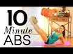 | 10 Min Ab Sculpting Workout to Blast Belly Fat These are my NEWEST six pack sculpting moves to help you tone your abs, lower belly, and obliques for a hard core and flat abs! It's only 10 minutes long but will target that belly fat zone. Grab your yoga mat, let's do some POP Pilates!
♥ CHECK OUT MY DVD: http://www.poppilatesdvd.com
♥ INSPIRATIONAL SHIRTS: http://www.shopblogilates.com
♥ SUBSCRIBE: http://bit.ly/blogilatesyt
♥ BLOG: http://www.blogilates.com
♥ FB: http://www.facebook.com/blogilates
♥ TWEET: http://www.twitter.com/blogilates
♥ TUMBLR: http://www.blogilates.tumblr.com
♥ PINTEREST: http://pinterest.com/blogilates
♥ INSTAGRAM: http://www.instagram.com/blogilates
******
Cassey Ho is a certified Pilates and fitness instructor, named Greatist's Top 100 Health & Fitness Influencers in the World alongside Michelle Obama. She is the winner of the "Social Fitness" Shorty Award and FITNESS Magazine named her their "Best Healthy Living Blogger". She's been featured on Dr. Oz, EXTRA TV, The Steve Harvey Show, COSMPOLITAN Magazine, SHAPE Magazine, Ladies Home Journal, SELF Magazine, NY Times, LA Times, and many more.
***
DISCLAIMER:
Blogilates and oGorgeous Inc. strongly recommend that you consult with your physician before beginning any exercise program.
You should be in good physical condition and be able to participate in the exercise.
You should understand that when participating in any exercise or exercise program, there is the possibility of physical injury. If you engage in this exercise or exercise program, you agree that you do so at your own risk, are voluntarily participating in these activities, assume all risk of injury to yourself, and agree to release and discharge Blogilates and oGorgeous Inc. from any and all claims or causes of action, known or unknown, arising out of Blogilates' and oGorgeous Inc.'s negligence. 13 min - 6 Oct 2014 |
Happily Ever After Abs | BRIDAL BOOTCAMP Welcome to the Blogilates Bridal Bootcamp! Your first video in this series focuses on your upper abs, lower abs, obliques and your waist. Why? When we work on your core, it not only helps tighten and strengthen your midsection, but it also helps you stand taller which makes you appear more confident! And don't you want to look and feel confident as you walk down the aisle? YES!
Every workout in the Blogilates Bridal Bootcamp is 10 minutes long with NO BREAKS. There are 10 moves that are done for 1 minute each, back to back. I'm training you this way to save you time while teaching your muscles to get stronger with intense moves in a very short amount of time.
The 10 ab exercises for your Bridal Bootcamp are:
1. Sit Up Heel Taps
2. Alt. Single Leg Jackknives
3. Sprinter
4. Half Leg Lift and Drop
5. Ballerina Sit Up
6. Eagle Abs
7. Candlestick Dipper (Right)
8. Candlestick Dipper (Left)
9. Super Side Planker (Right)
10. Super Side Planker (Left)
If you are starting to do some of your own wedding planning, I recommend you check out http://www.TheKnot.com. You can create your own wedding website for free as well as search for great vendors in your area.
BIG THANKS TO my friends at Lovesome Blossoms and DJZ Productions for the INCREDIBLE floral display and draping!
LOVESOME BLOSSOMS: https://www.instagram.com/lovesomeblossoms/
DJZ PRODUCTIONS: https://www.instagram.com/djz_productions/
Here is where I get all of my music! Epidemic Sound: https://goo.gl/Nj4ZMg
******
Cassey Ho is an award-winning fitness instructor, entrepreneur and online personality. As the creator behind Blogilates, the #1 female fitness channel on YouTube, she’s transformed millions of lives through helping them achieve their strength and weight-loss goals. She focuses on making fitness fun and the results are evident. Cassey's unique format, POP Pilates©, which launched as a workout video on YouTube in 2009, has become a live fitness class that can be taken at gyms all over the world with over 3,000 POP Pilates classes being taught monthly. Her authenticity continues to shine through, making her one of the most relatable fitness icons online and beyond. She's also the author of the best-selling book, Hot Body Year Round and is the designer of her own activewear line, POPFLEX.
With a wide range of free workout videos available, Cassey's channel focuses on ab exercises, butt & thigh exercises, arm exercises, pilates, cardio routines, fat burning workouts, high intensity interval training workouts (HIIT), stretching and flexibility routines and so much more!
***
DISCLAIMER:
Blogilates and oGorgeous Inc. strongly recommend that you consult with your physician before beginning any exercise program.
You should be in good physical condition and be able to participate in the exercise.
You should understand that when participating in any exercise or exercise program, there is the possibility of physical injury. If you engage in this exercise or exercise program, you agree that you do so at your own risk, are voluntarily participating in these activities, assume all risk of injury to yourself, and agree to release and discharge Blogilates and oGorgeous Inc. from any and all claims or causes of action, known or unknown, arising out of Blogilates' and oGorgeous Inc.'s negligence. 14 min - 18 Mar 2018 |
.jpg) | 5 Best Exercises to Flatten your Lower Belly Flattening the lower abs is possible with a combination of proper training and clean eating. Today I'm going to show you the best moves that will tighten your ab muscles so that they won't protrude. Train hard and follow this months free workout calendar here: http://bit.ly/1deRt3S
♥ CHECK OUT MY DVD: http://www.poppilatesdvd.com
♥ INSPIRATIONAL SHIRTS: http://www.blogilatesdesigns.com
♥ SUBSCRIBE: http://bit.ly/blogilatesyt
♥ BLOG: http://www.blogilates.com
♥ FB: http://www.facebook.com/blogilates
♥ TWEET: http://www.twitter.com/blogilates
♥ TUMBLR: http://www.blogilates.tumblr.com
♥ PINTEREST: http://pinterest.com/blogilates
♥ INSTAGRAM: http://www.instagram.com/blogilates
CLOTHING:
Top from: http://solowstyle.com/
Bottoms from: Forever 21
Filmed and edited by Brad Etter
*****
Cassey Ho is a certified Pilates and fitness instructor, winner of YouTube Next Trainer, and was also recently named FITNESS Magazine's Best Healthy Living Blogger. 10 min - 10 Mar 2014 |
Ab Blast | BEGINNER PILATES ABS WORKOUT Okay you guys, I know this video is called "level 1" but really, it's for ALL levels because today, I really want to make sure we have a solid pilates abs foundation. It's a good thing for EVERYONE to check their form every once in a while, no matter how advanced you are!! If you can get through this video without your neck or your back hurting and without feeling like it didn't really work your abs, then you're ready to move on to level 2 with me next week!
0:00 Intro
1:36 Hundreds
3:38 Single Leg Stretch
5:57 Roll Ups
8:10 Double Leg Stretch
9:54 Heel Reaches
11:43 Candlestick Dippers (R)
12:56 Candlestick Dippers (L)
14:05 Plank
#abworkout #pilates #blogilates #blogilatesabs
Here is where I get all of my music! Epidemic Sound: http://share.epidemicsound.com/sgFTn
My outfit & yoga mat are from: http://www.popflexactive.com
******
Cassey Ho is an award-winning fitness instructor, entrepreneur and online personality. As the creator behind Blogilates, the #1 female fitness channel on YouTube, she’s transformed millions of lives through helping them achieve their strength and weight-loss goals. She focuses on making fitness fun and the results are evident. Cassey's unique format, POP Pilates©, which launched as a workout video on YouTube in 2009, has become a live fitness class that can be taken at gyms all over the world with over 3,000 POP Pilates classes being taught monthly. Her authenticity continues to shine through, making her one of the most relatable fitness icons online and beyond. She's also the author of the best-selling book, Hot Body Year Round and is the designer of her own activewear line, POPFLEX.
With a wide range of free workout videos available, Cassey's channel focuses on ab exercises, butt & thigh exercises, arm exercises, pilates, cardio routines, fat burning workouts, high intensity interval training workouts (HIIT), stretching and flexibility routines and so much more!
***
DISCLAIMER:
Blogilates and oGorgeous Inc. strongly recommend that you consult with your physician before beginning any exercise program.
You should be in good physical condition and be able to participate in the exercise.
You should understand that when participating in any exercise or exercise program, there is the possibility of physical injury. If you engage in this exercise or exercise program, you agree that you do so at your own risk, are voluntarily participating in these activities, assume all risk of injury to yourself, and agree to release and discharge Blogilates and oGorgeous Inc. from any and all claims or causes of action, known or unknown, arising out of Blogilates' and oGorgeous Inc.'s negligence. 17 min - 6 Jul 2020 |
3 minute Abs Workout | POP Pilates TURBO I'm giving you just 3 minutes to do 6 moves back to back that will KILL YOUR ABS! Ready? Let's go!
♥ I HAVE A NEW DVD: http://www.poppilatesdvd.com
♥ INSPIRATIONAL SHIRTS: http://www.shopblogilates.com
♥ SUBSCRIBE: http://bit.ly/blogilatesyt
♥ BLOG: http://www.blogilates.com
♥ FB: http://www.facebook.com/blogilates
♥ TWEET: http://www.twitter.com/blogilates
♥ TUMBLR: http://www.blogilates.tumblr.com
♥ PINTEREST: http://pinterest.com/blogilates
♥ INSTAGRAM: http://www.instagram.com/blogilates
******
Cassey Ho is a certified Pilates and fitness instructor, named Greatist's Top 25 Health & Fitness Influencers in the World alongside Michelle Obama. She is the winner of the "Social Fitness" Shorty Award and FITNESS Magazine named her their "Best Healthy Living Blogger". She's been featured on Dr. Oz, EXTRA TV, The Steve Harvey Show, COSMPOLITAN Magazine, SHAPE Magazine, Ladies Home Journal, SELF Magazine, NY Times, LA Times, and many more.
***
DISCLAIMER:
Blogilates and oGorgeous Inc. strongly recommend that you consult with your physician before beginning any exercise program.
You should be in good physical condition and be able to participate in the exercise.
You should understand that when participating in any exercise or exercise program, there is the possibility of physical injury. If you engage in this exercise or exercise program, you agree that you do so at your own risk, are voluntarily participating in these activities, assume all risk of injury to yourself, and agree to release and discharge Blogilates and oGorgeous Inc. from any and all claims or causes of action, known or unknown, arising out of Blogilates' and oGorgeous Inc.'s negligence. 4 min - 31 Aug 2015 |
.jpg) | 10 MIN PERFECT ABS WORKOUT (NO EQUIPMENT BODYWEIGHT WORKOUT!) To develop a truly impressive Sixpack, you will want to train from abs a whole range of perspectives. You see, the core is generally made up of four key components. Namely - the rectus abdominus (6pack / lower abs), obliques, the serratus anterior, and the transverse abdominus (inner abs).
The obliques are an absolute must when it comes to developing an aesthetic physique. If your goal is to attain the V tapered look, there’s no way around training them. The obliques are a multifunctional muscle, they act to pull the chest downwards and compress the abdominal cavity, as well as performing side bending and opposing side rotation. Overall, you can’t skimp on your obliques for aesthetic and performance, and the best way to ensure that you stay on track is to keep your workouts fresh & challenging
The serratus is a muscle that originates on your upper rib cage and attaches to the media border of the shoulder blade (basically the shark gill looking things). The serratus muscles play a pivotal role in framing out your abs, obliques and lower pec. Not too mention, it absolutely serves as an asset to the v taper, in turn giving you a better looking set of abs!
This video is full length which means you can just follow along with whatever I'm doing. If you need extra rest, just pause the video. If you don't need a rest - watch it the whole way through.
You can hit this home workout 2-3x per week - and if you wanted to keep active on your other days - be sure to check out my other workouts!
üëâCoaching Programs: https://www.fraserwilsonfitness.com
üëâSubscribe: (https://goo.gl/84uFTA)
üí™Supplement Code: FRASER10 at https://www.ehplabs.com/
üëâShop Gymshark: https://gym.sh/Shop-Fraser2
ADD ME ON:
Instagram: https://www.instagram.com/FraserWilsonFit/
Facebook: https://facebook.com/FraserWilsonFit/
Snapchat: FraserWilsonFit
Music:
Ship Wrek & Zookeepers - Ark [NCS Release]:
https://youtu.be/8xlDwukxjnA
Heuse & Zeus x Crona - Pill (feat. Emma Sameth) [NCS Release]:
https://youtu.be/CLiXUT3MS34
Cartoon - On & On (feat. Daniel Levi) [NCS Release]:
https://youtu.be/K4DyBUG242c
3rd Prototype - Renegade (feat. Harley Bird & Valentina Franco) [NCS Release]:
https://youtu.be/7mghPZOCvKk 10 min - 20 Dec 2019 |
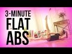 | How to get Flat Abs in 3 minutes! This is a 3 min flat abs challenge to tighten your belly and harden your core! You'll be performing my new POP Pilates move - the Ab Twist Crunch. Ready? Let's go!
♥ I HAVE A NEW DVD: http://www.poppilatesdvd.com
♥ INSPIRATIONAL SHIRTS: http://www.shopblogilates.com
♥ SUBSCRIBE: http://bit.ly/blogilatesyt
♥ BLOG: http://www.blogilates.com
♥ FB: http://www.facebook.com/blogilates
♥ TWEET: http://www.twitter.com/blogilates
♥ TUMBLR: http://www.blogilates.tumblr.com
♥ PINTEREST: http://pinterest.com/blogilates
♥ INSTAGRAM: http://www.instagram.com/blogilates
******
Cassey Ho is a certified Pilates and fitness instructor, named Greatist's Top 25 Health & Fitness Influencers in the World alongside Michelle Obama. She is the winner of the "Social Fitness" Shorty Award and FITNESS Magazine named her their "Best Healthy Living Blogger". She's been featured on Dr. Oz, EXTRA TV, The Steve Harvey Show, COSMPOLITAN Magazine, SHAPE Magazine, Ladies Home Journal, SELF Magazine, NY Times, LA Times, and many more.
***
DISCLAIMER:
Blogilates and oGorgeous Inc. strongly recommend that you consult with your physician before beginning any exercise program.
You should be in good physical condition and be able to participate in the exercise.
You should understand that when participating in any exercise or exercise program, there is the possibility of physical injury. If you engage in this exercise or exercise program, you agree that you do so at your own risk, are voluntarily participating in these activities, assume all risk of injury to yourself, and agree to release and discharge Blogilates and oGorgeous Inc. from any and all claims or causes of action, known or unknown, arising out of Blogilates' and oGorgeous Inc.'s negligence. 7 min - 25 May 2015 |
.jpg) | 20 minute Waist Whittler Cardio Pilates Workout | 7 Day Ab Challenge (do this video every day) I want you to join me for the #7DayAbChallenge. https://www.blogilates.com/7-day-ab-challenge-2020/ In less than 30 minutes a day, we will be building our ab muscles, melting belly fat, and getting stronger!!
7 DAY AB CHALLENGE
Purpose: To build and reveal your abs in 7 days!
Begins: Monday May 4, 2020
Ends: Sunday May 10, 2020
Length: 7 days
Daily commitment: 20-30 min
How it works:
Day 0: Save the challenge graphic and upload it to Instagram or TikTok and let everyone know you’re doing this! Make sure to hashtag #7DayAbChallenge and tag @blogilates.
Day 0: Take a before picture or video of you abs.
Day 1-7: Complete the workouts listed for the day. You can even film yourself doing these and have a cool progress video that you can upload to Instagram, TikTok, or YouTube at the end of the week!
Day 1-7: Make sure to drink at least 64 oz of water a day for all 7 days.
Day 1-7: Make sure to reduce your intake of refined/processed carbs (bread, crackers, cereal, pastries etc.) and replace with whole vegetables and fruits for 7 days.
End of Day 7: Take an after picture or video of your abs and upload the results to Instagram, TikTok, or YouTube! Make sure to include the #7DayAbChallenge hashtag and tag @blogilates so other users can find the challenge!
WAIST WHITTLER CARDIO PILATES
1. Jump squats
2. Hip twists
3. Plank jacks
4. Double leg lifts
5. Plank jack pikes
6. Star abs
7. Flutters
We'll do each move for 45 seconds, with a 15 second break between. Let's do this!!!
Download the full challenge graphic: https://www.blogilates.com/7-day-ab-challenge-2020/
Day 1
Waist Whittler Cardio Pilates (20 min): https://youtu.be/LzYAgCw-_B0
Day 2
Waist Whittler Cardio Pilates (20 min): https://youtu.be/LzYAgCw-_B0
Day 3
Waist Whittler Cardio Pilates (20 min): https://youtu.be/LzYAgCw-_B0
Day 4
Waist Whittler Cardio Pilates (20 min): https://youtu.be/LzYAgCw-_B0
Beautiful Ab Sculpt (10 min): https://youtu.be/9wxVX1jn_YU
Day 5
Waist Whittler Cardio Pilates (20 min): https://youtu.be/LzYAgCw-_B0
Beautiful Ab Sculpt (10 min): https://youtu.be/9wxVX1jn_YU
Day 6
Waist Whittler Cardio Pilates (20 min): https://youtu.be/LzYAgCw-_B0
Beautiful Ab Sculpt (10 min): https://youtu.be/9wxVX1jn_YU
Day 7
Waist Whittler Cardio Pilates (20 min): https://youtu.be/LzYAgCw-_B0
Beautiful Ab Sculpt (10 min): https://youtu.be/9wxVX1jn_YU
#abworkout #pilates #poppilates #blogilates #challenge
Here is where I get all of my music! Epidemic Sound: http://share.epidemicsound.com/sgFTn
My outfit & yoga mat are from: http://www.popflexactive.com
******
Cassey Ho is an award-winning fitness instructor, entrepreneur and online personality. As the creator behind Blogilates, the #1 female fitness channel on YouTube, she’s transformed millions of lives through helping them achieve their strength and weight-loss goals. She focuses on making fitness fun and the results are evident. Cassey's unique format, POP Pilates©, which launched as a workout video on YouTube in 2009, has become a live fitness class that can be taken at gyms all over the world with over 3,000 POP Pilates classes being taught monthly. Her authenticity continues to shine through, making her one of the most relatable fitness icons online and beyond. She's also the author of the best-selling book, Hot Body Year Round and is the designer of her own activewear line, POPFLEX.
With a wide range of free workout videos available, Cassey's channel focuses on ab exercises, butt & thigh exercises, arm exercises, pilates, cardio routines, fat burning workouts, high intensity interval training workouts (HIIT), stretching and flexibility routines and so much more!
***
DISCLAIMER:
Blogilates and oGorgeous Inc. strongly recommend that you consult with your physician before beginning any exercise program.
You should be in good physical condition and be able to participate in the exercise.
You should understand that when participating in any exercise or exercise program, there is the possibility of physical injury. If you engage in this exercise or exercise program, you agree that you do so at your own risk, are voluntarily participating in these activities, assume all risk of injury to yourself, and agree to release and discharge Blogilates and oGorgeous Inc. from any and all claims or causes of action, known or unknown, arising out of Blogilates' and oGorgeous Inc.'s negligence. 25 min - 3 May 2020 |
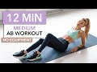 | 12 MIN AB WORKOUT - Medium Level / No Equipment I Pamela Reif I know I'm popular for my super duper intense Sixpack Workouts .. and I also have Beginner ones. But what about something IN BETWEEN? ♥︎ / Werbung
If you're not a Beginner anymore, but the other videos are still a tiny bit too hard for you. This workout is for you! I hope I managed to find the perfect "in between" Level - a MEDIUM one.
Have fun! :)
__
The video is in full length which means you can just follow whatever I’m doing 30s for each exercise. If you need a break - TAKE IT! Don't worry too much about that. You will improve over time :) that's the best feeling!
I recommend switching up your workouts to give your muscles enough time to recover and to hit them from different angles. If you want to challenge your body in another way: check out my Live Workouts (with talking + explanations), the 20min Full Body Workouts, Leg Workouts or the Song Workouts.
▸ you can find WORKOUT PLANS with those videos on my Instagram Channel. 30min, 45min and Beginner Friendly combinations. Check out the Highlight Bubble "Workout Plans" for that.
➞ Instagram http://www.instagram.com/pamela_rf/
__
▸ You can always find ALL SONGS in my workout playlist. I update it weekly & it's available on Spotify, Apple Music, etc. ♥︎
http://wmg.click/GetActive
1. Deepend feat. She Keeps Bees - Desire 0:00 - 2:41
2. Sam Feldt feat. Ella Henderson - Hold me Close 2:42 - 5:44
3. Diplo, Sidepiece - On My Mind 5:45 - 9:30
4. Dubdogz, Bhaskar - Infinity 9:31 - 12:38
__
➞ Instagram http://www.instagram.com/pamela_rf/
➞ Food Account http://www.instagram.com/pamgoesnuts/
__
unterstützt durch Warner Music Germany
Disclaimer:
When joining me for this workout video, you need to take some precautions as your health and safety is the most important. To avoid any injury or harm, you need to check your health with your doctor before exercising. By performing any fitness exercises without supervision like with this video, you are performing them at your own risk. See a fitness professional to give you advice on your exercise form. Pamela Reif will not be responsible or liable for any injury or harm you sustain as a result of this video. 13 min - 29 Mar 2020 |
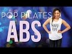 | Flat Abs Workout | POP Pilates for Beginners If you want to get started with POP Pilates, start here. It is the best way to strengthen your core, shape your waist, and get gorgeous abs! This video is very thorough with technique and explanations so it's great for beginners, but POPsters of all levels should do this video as it will help you build a solid foundation for all of your POP Pilates workouts. This at home workout is easy to do anywhere with no equipment. Let's go and work our abs!
Here are the exercise moves you will see in this workout:
- Roll Up
- Hundreds
- Hundreds Legs Up
- Split Hundreds
- Double Leg Stretch
- Single Leg Drop
- Double Leg Extensions
- Table Top Crunch
- Oblique Swivels
- Twisting Crunch
- Plank
- Side Plank
♥ Get all my workout calendars and read my blog: http://www.blogilates.com
♥ MY ACTIVEWEAR: http://www.popflexactive.com
♥ Get the Blogilates App FREE in the App Store or Google Play Store!
♥ INSTAGRAM: @Blogilates
♥ SNAPCHAT: @Blogilates
♥ FACEBOOK: http://www.facebook.com/blogilates
♥ TWITTER: http://www.twitter.com/blogilates
******
Cassey Ho is an award-winning fitness instructor, entrepreneur and online personality. She is the creator of Blogilates, the #1 female fitness channel on Youtube. In a revolutionary partnership, Cassey's unique format, POP Pilates© which launched on Youtube in 2009, has become a live class that can be taken at every 24 Hr Fitness gym in the US. She's the author of the best-selling book, Hot Body Year Round and is the designer of her own activewear line, POPFLEX.
***
DISCLAIMER:
Blogilates and oGorgeous Inc. strongly recommend that you consult with your physician before beginning any exercise program.
You should be in good physical condition and be able to participate in the exercise.
You should understand that when participating in any exercise or exercise program, there is the possibility of physical injury. If you engage in this exercise or exercise program, you agree that you do so at your own risk, are voluntarily participating in these activities, assume all risk of injury to yourself, and agree to release and discharge Blogilates and oGorgeous Inc. from any and all claims or causes of action, known or unknown, arising out of Blogilates' and oGorgeous Inc.'s negligence. 18 min - 5 Dec 2016 |
.jpg) | Victoria Secret Model Ab Workout Wanna get those toned Victoria Secret Model Abs? Okay! Here 's how! This is a full Pilates routine to Taylor Swift's "I Knew You Were Trouble", Ke$ha's "Die Young", and Ne-Yo's "Let Me Love You".
♥ GET MY DVD: http://www.poppilatesdvd.com♥
♥ INSPIRATIONAL SHIRTS: http://www.shopblogilates.com
♥ BLOG: http://www.blogilates.com
♥ FB: http://www.facebook.com/blogilates
♥ TWEET: http://www.twitter.com/blogilates
♥ TUMBLR: http://www.blogilates.tumblr.com
♥ PINTEREST: http://pinterest.com/blogilates
♥ INSTAGRAM: http://web.stagram.com/n/blogilates/
*****
Cassey Ho is a certified Pilates and fitness instructor, winner of YouTube Next Trainer, and was also recently named FITNESS Magazine's Best Healthy Living Blogger.
*****
CLOTHES: Paraty tank and Blast capri from http://www.feelfitwear.com 14 min - 2 Nov 2012 |
Pyramid Ab Workout - 500 reps! Today, we're gonna be climbing a mountain... of abs! We'll start each move with one rep, climb all the way up to ten reps, and then climb back down! If this is anything like Pyramid Thighs, it's going to be soooo hard!!!
The five moves are:
1. Crunches
2. Crunch to the right
3. Crunch to the left
4. Leg lifts
5. Roll ups
If you're ready to jump into another pyramid workout, check out Pyramid Thighs: https://youtu.be/3yY4wRn2LhI
Workout starts at 1:14!
#absworkout
#abs
#blogilates
******
Cassey Ho is an award-winning fitness instructor, entrepreneur and online personality. As the creator behind Blogilates, the #1 female fitness channel on YouTube, she’s transformed millions of lives through helping them achieve their strength and weight-loss goals. She focuses on making fitness fun and the results are evident. Cassey's unique format, POP Pilates©, which launched as a workout video on YouTube in 2009, has become a live fitness class that can be taken at gyms all over the world with over 3,000 POP Pilates classes being taught monthly. Her authenticity continues to shine through, making her one of the most relatable fitness icons online and beyond. She's also the author of the best-selling book, Hot Body Year Round and is the designer of her own activewear line, POPFLEX.
With a wide range of free workout videos available, Cassey's channel focuses on ab exercises, butt & thigh exercises, arm exercises, pilates, cardio routines, fat burning workouts, high intensity interval training workouts (HIIT), stretching and flexibility routines and so much more!
***
DISCLAIMER:
Blogilates and oGorgeous Inc. strongly recommend that you consult with your physician before beginning any exercise program.
You should be in good physical condition and be able to participate in the exercise.
You should understand that when participating in any exercise or exercise program, there is the possibility of physical injury. If you engage in this exercise or exercise program, you agree that you do so at your own risk, are voluntarily participating in these activities, assume all risk of injury to yourself, and agree to release and discharge Blogilates and oGorgeous Inc. from any and all claims or causes of action, known or unknown, arising out of Blogilates' and oGorgeous Inc.'s negligence. 25 min - 11 Nov 2018 |
Tapout XT - Ultimate Abs XT 17 min - 2 May 2016 |
Visible Lower Abs (3 Exercises!) Looking for the best exercises to get visible lower abs? Then you are in the right place!
Im showing you my top 3 exercises to really get to those lower abs and tighten and tone your stomach area.
Give these exercises a go, and either repeat each move for about 20-30 reps alone or add onto the end of your ab workout.
------------
♡ DO THE QUIZ TO KNOW YOUR NUTRITION AND TRAINING:
https://bit.ly/31IqNb9
------------
FOLLOW ME:
♡ Instagram: https://www.instagram.com/hollydolke/ 4 min - 25 Jul 2019 |
.jpg) | Cardio Ab Blast Workout | Level 2- BeFit in 30 Extreme Cardio Ab Blast Workout | Level 2 from BeFit in 30 Extreme is an intense, fat-burning, abdominal workout routine that employs a unique blend of cardio and ab-sculpting exercises spread out over 3 fierce circuits of 3 moves each to boost metabolism, blast away calories, and tone the abs, obliques, chest, butt, legs, arms, shoulders, and back. Challenge your core as you ignite your weight-loss potential with Fitness Expert & Professional Trainer, Susan Becraft. Learn how to focus your breathing and utilize proper form to maximize results as you tighten the glutes and inner thighs, shape the hips, and shred the abs and obliques for a flat and sexy midsection. Build lean muscle and alleviate lower back pain as you strengthen and stabilize the core with a series of concentrated exercises like triple squats, plank push-ups, chest presses, side V-ups, alternating leg flys, lateral planks, oblique side crunches, lateral leg touches, butt kicks, and jumping jack variations in this effective segment from the all new second level of the "BeFit in 30 Extreme" program, only on the BeFit Channel! You will need a towel, a set of dumbbells, and a bottle of water to complete this workout that can be done anywhere. Adjust this workout to suit your skill level by using the modifications provided, adjusting reps, weight amounts, or extending rest periods. Susan's upbeat attitude and detailed instruction will serve as an inspiration as you travel down the road to six pack abs. Workout out with the pros right from your own home with this booty-lifting, waist-slimming workout that will have you bikini-ready in no time. Look and feel your best as you work out with the pros right from your own living room. Transform yourself with this effective, free, new system and create a stronger, leaner, and healthier new you. See below for a complete list of workout moves, time codes, and suggested reps. Click here to tune in to the BeFit in 30 Extreme playlist for new workouts featuring Scott Herman and Susan Becraft: http://bit.ly/UomNG3
CLICK HERE to go to BEFIT.COM
http://www.befit.com/?utm_source=youtube&utm_medium=Befitchannel&utm_campaign=annoHome
Click to Subscribe to BefiT on Amazon Instant Video for Workout Solutions for Every Body!
http://www.befit.com/subscribe/?utm_source=youtube&utm_medium=YTOrganic&utm_campaign=annoDR
Click here to own the Complete BeFit in 30 Extreme System on DVD from Amazon:
http://www.amazon.com/Befit-In-Extreme-Scott-Herman/dp/B00O9OEAJU/ref=lh_ni_t?ie=UTF8&psc=1&smid=ATVPDKIKX0DER
Circuit 1: * (30 Seconds Rest After Each Move)
[2:28] Triple Squat w/ Dumbbell 60 Seconds/ Maximum Reps
[2:43] Push Up to Plank 60 Seconds/ Maximum Reps
[2:50] Oblique Side Crunch 30 Seconds per side/ Max Reps
Circuit 2: * (30 Seconds Rest After Each Move)
[7:24] Lateral Leg Touch 60 Seconds/ Max Reps (Alternate Sides)
[7:36] Chest Press 60 Seconds/ Maximum Reps
[7:49] Side V-Ups 30 Seconds per side/ Max Reps
Circuit 3: * (30 Seconds Rest After Each Move)
[12:30] Star Lateral Planks 60 Seconds/ Max Reps (Alternate Sides)
[12:41] Alternating Leg Flys 60 Seconds/ Max Reps (Alternate Legs)
[12:51] Triple Crunch 60 Seconds/ Max Reps
Finishing Core Moves:
[17:33] Elbow Plank Hold 60 Seconds
[18:48] Superman 30 Second hold
[19:44] Cool Down Series
Click Here to check out Susan Becraft's Channel:
http://www.youtube.com/user/StrongLikeSusan
Click Here to check out the Scott Herman Fitness Channel:
http://www.youtube.com/user/ScottHermanFitness
Click Here to Subscribe to the BeFit channel:
http://www.youtube.com/subscription_center?add_user=Befit
For full selection of great workouts like this one, visit the BeFit Channel on YouTube:
http://www.youtube.com/befit
Check out our official website at:
http://www.lionsgatebefit.com
Check us out on Facebook
http://www.facebook.com/lionsgatebefit
Follow us on Twitter at:
http://www.twitter.com/lionsgatebefit
Check us out on Google+
https://plus.google.com/104994741925506474033/posts
Check us out on Pinterest
http://www.pinterest.com/lionsgatebefit
To purchase DVD's, Check out the Lionsgate Fitness store at:
http://www.lionsgateshop.com/search_results.asp?type=fitness&GenreId=8 22 min - 6 Feb 2013 |
20 MIN TOTAL CORE/AB WORKOUT (At Home No Equipment) 20 min INTENSE ab workout you can do anywhere & is equipment free! Work on toning your core at home with this killer abs workout!
⭐️SHOP MY COOKBOOKS!: https://goo.gl/XHwUJg
⭐️DO THIS WARM UP FIRST: http://bit.ly/2riv8T6
⭐️DO THIS COOL DOWN AFTER: http://bit.ly/2YO55PP
⭐️WORKOUTS TO PAIR WITH THIS ONE:
10 min Toned Upper Body: https://bit.ly/2QOsLRx
12 min Fat Burning HIIT: https://bit.ly/2QKUeUk
15 min Booty Burn: https://bit.ly/3abNd6H
20 min Full Body: https://bit.ly/39llkaP
üëâüèºSUBSCRIBE TO MY MAIN CHANNEL (what i eat, recipes, vlogs): https://goo.gl/WTpDQk
üì∑ GEAR I USE:
üëâüèºTHE MAT I USE (Exercise 6X4): http://gorillamats.com?aff=19 (MADFIT10 for 10% off)
CAMERA: https://goo.gl/rVQzXd
42.5mm LENS: https://goo.gl/oLRc2u
TRIPOD: https://goo.gl/ihp5br
MICROPHONE: https://goo.gl/fPzkRN
GOPRO: https://goo.gl/D6eMwL
✘ I N S T A G R A M: @madfit.ig
✘ T W I T T E R: @maddielymburner
✘ F A C E B O O K: facebook.com/madfit.ig
✉ C O N T A C T (business inquiries): madfit95@gmail.com 23 min - 27 Mar 2020 |
Stability Ball AB WORKOUT // Strong Core + Flat Stomach Exercises This stability ball ab workout will target that core building strength and definition in the abs. Building lean muscle in the core will help burn fat around the mid-section faster helping you to achieve a toned, flat stomach. Five different ab exercises today using that stability ball and we will get through 2 rounds total. Let's Go!!
Visit: https://www.heatherrobertson.com
Where I get my Music *Try it FREE for 30 days*
http://share.epidemicsound.com/zj9WV
My Go-To Supplements, Beauty Products + More: https://www.amazon.com/shop/heatherrobertson
L I N K S
Website: http://www.heatherrobertson.com
Instagram: http://www.instagram.com/heatherrobertsoncom
Twitter: http://www.twitter.com/followheatherr
Facebook: http://www.facebook.com/heatherrobertsoncom
__
D I S C L A I M E R
This is my own personal workout and may not be suited for you. It is strongly recommend that you consult with your physician before beginning any exercise program. By engaging in this exercise or exercise program, you agree that you do so at your own risk.
__
Thanks for watching!
❤ Heather 11 min - 3 Oct 2019 |
Intense Abs Workout Routine - 10 Mins Flat Stomach Exercise Intense Abs Workout Routine - 10 Mins Flat Belly Exercise | Abs Routine | Abs Exercise | Flat Stomach Exercise | Flat Belly Workout | Tone Abs | Summer Body | Beach Body Workout
►►Fitness wear I frequently use:
http://gym.sh/Shop-Chloe-Ting
►►► MY LINKS ►►►
Instagram: http://instagram.com/chloe_t
Fitness Instagram: http://instagram.com/itschloeting
Blog: http://www.chloeting.com
Twitter: http://twitter.com/chloe_ting
Facebook: http://www.facebook.com/itschloeting
Snapchat: chloe_ting
I hope you guys like this type of video! I've never done a do it with me workout video because it can be quite long. Let me know if you prefer this format! :)
Love you all!
Music:
Razihel - Love U [NCS Release]: https://youtu.be/OJBxNA8cX-E
Follow Razihel:
Razihel
• https://soundcloud.com/razihel
• https://www.facebook.com/RazihelOffic...
• https://www.youtube.com/user/RazihelO...
• https://www.instagram.com/razihel/
Fareoh - Cloud Ten [NCS Release]: https://youtu.be/yzirKVtSERU
Follow Fareoh here:
• https://soundcloud.com/fareoh
• https://www.facebook.com/Fareoh/
• https://twitter.com/thefareoh
• https://www.youtube.com/user/official... 11 min - 21 Jul 2016 |
Sore-y Not Sorry Ab Workout Challenge | Sorry Not Sorry by Demi Lovato This ab workout made me SO SORE but I was NOT SORRY as Demi Lovato would say! Guys, this is a hard core routine that will sculpt, tone, and tighten your upper abs, lower abs, midsection, and overall core. I'm put together some of my favorite ab exercises full of POP Pilates flair and I promise you that you will BURN so good!
Make sure that when you are in Pilates Stance, your head, neck and shoulders are lifted off of the mat! Your head should really be just floating on top of your shoulders. It should not feel heavy if you're engaging your upper abs and pressing your lower back into the mat!
Remember, even if you're doing my workouts to achieve a flat belly or a six pack or Victoria's Secret model abs, the whole point of exercise is BEYOND the physical. When you do Blogilates, it's about how confident and happy you will feel! The flat abs are just a side benefit! Got it!? Love you!
My outfit & yoga mat are from: http://www.popflexactive.com
******
Cassey Ho is an award-winning fitness instructor, entrepreneur and online personality. As the creator behind Blogilates, the #1 female fitness channel on YouTube, she’s transformed millions of lives through helping them achieve their strength and weight-loss goals. She focuses on making fitness fun and the results are evident. Cassey's unique format, POP Pilates©, which launched as a workout video on YouTube in 2009, has become a live fitness class that can be taken at gyms all over the world with over 3,000 POP Pilates classes being taught monthly. Her authenticity continues to shine through, making her one of the most relatable fitness icons online and beyond. She's also the author of the best-selling book, Hot Body Year Round and is the designer of her own activewear line, POPFLEX.
With a wide range of free workout videos available, Cassey's channel focuses on ab exercises, butt & thigh exercises, arm exercises, pilates, cardio routines, fat burning workouts, high intensity interval training workouts (HIIT), stretching and flexibility routines and so much more!
***
DISCLAIMER:
Blogilates and oGorgeous Inc. strongly recommend that you consult with your physician before beginning any exercise program.
You should be in good physical condition and be able to participate in the exercise.
You should understand that when participating in any exercise or exercise program, there is the possibility of physical injury. If you engage in this exercise or exercise program, you agree that you do so at your own risk, are voluntarily participating in these activities, assume all risk of injury to yourself, and agree to release and discharge Blogilates and oGorgeous Inc. from any and all claims or causes of action, known or unknown, arising out of Blogilates' and oGorgeous Inc.'s negligence. 5 min - 12 Jan 2018 |
15 MIN CHAIR WORKOUT - Extreme Full Body Training / Nothing for Beginners | Pamela Reif A full body workout - only using a chair or bench (which we all have at home .. so no excuses hehe). // Werbung
A very intense sequence of exercises working your: abs, core strength, arms & back muscles, chest, glutes, inner and outer thighs and your CARDIO. So all in all a great way to fire up your entire body in 15min ♥︎
I know a lot of those movements are very challenging - if you need a break - take it! You will get better over time :)
Another option is performing the exercise without the chair (and for example) placing your feet on the ground. You do you! ♥︎
The video is in full length which means you can just follow whatever I’m doing 30s for each exercise. There is one 1min rests in between.
I recommend switching up your workouts to give your muscles enough time to recover and to hit them from different angles. You can do this workout 2-3x a week and if you want to do be active on the other days: check out my Sixpack, Muffin Top, Sexy Arms, Calorie Burn or Booty Workout!!
__
➞ Instagram http://www.instagram.com/pamela_rf/
➞ Food Account http://www.instagram.com/pamgoesnuts/
MUSIC by Epidemic Sound
http://www.epidemicsound.com
CONTACT ME (business inquires):
pamela_reif@icloud.com
Disclaimer:
When joining me for this workout video, you need to take some precautions as your health and safety is the most important. To avoid any injury or harm, you need to check your health with your doctor before exercising. By performing any fitness exercises without supervision like with this video, you are performing them at your own risk. See a fitness professional to give you advice on your exercise form. Pamela Reif will not be responsible or liable for any injury or harm you sustain as a result of this video. 16 min - 17 Feb 2019 |
10 Min Lower Ab Workout | LOSE Lower Belly FAT 10 Min Intense Lower Ab Workout | LOSE Lower Belly FAT | Abs Workout | Lower Belly | Blast Lower Belly Fat
Wearing: http://gym.sh/Shop-Chloe-Ting
☆ MY LINKS ☆
Instagram: http://instagram.com/chloe_t
Fitness Instagram: http://instagram.com/itschloeting
Blog: http://www.chloeting.com
Twitter: http://twitter.com/chloe_ting
Facebook: http://www.facebook.com/itschloeting
Snapchat: chloe_ting
MUSIC:
Song: Jim Yosef - Link [NCS Release]
Music provided by NoCopyrightSounds.
Watch: https://youtu.be/9iHM6X6uUH8
Download/Stream: http://ncs.io/LinkYO
Song: Ship Wrek, Zookeepers & Trauzers - Vessel [NCS Release]
Music provided by NoCopyrightSounds.
Watch: https://youtu.be/PXf4rkguwDI
Download/Stream: http://ncs.io/VesselCr
Song: Ship Wrek & Zookeepers - Ark [NCS Release]
Music provided by NoCopyrightSounds.
Watch: https://youtu.be/8xlDwukxjnA
Download/Stream: http://ncs.io/ark 11 min - 4 Jul 2017 |
Bowflex® Bodyweight Workout | Eight-Minute At-Home Ab Workout Check out more Bowflex workouts here: https://goo.gl/jkjFMm
Four moves and eight minutes is all you need to complete this awesome ab workout! These four exercises can be done with modifications to make them as easy or as difficult as needed. Make sure to take time, and focus on form. These exercises aren't about how quick you do them, but how well you do them.
Do the four exercises listed below for 45 seconds each with 15 seconds rest in between. Then repeat the four exercises for round two.
1) Classic Crunch
2) Plank
3) Cross Crunch
4) Rope Climbs
Want an ab workout that doesn't require going to the floor? Try this 6-Minute Standing Ab Workout: https://youtu.be/bkHuvrLxpUU
If planks are more your thing, try this 3-Minute Perfect Plank Workout: https://youtu.be/ynUw0YsrmSg
Subscribe for more workouts and tips: http://goo.gl/sxLYmP
Additional fitness tips: http://goo.gl/vFWbTL
Quick workouts: http://goo.gl/mj1b0C
http://www.Bowflex.com - Find all the fitness solutions you'll ever need to be a healthier you.
http://www.BowflexInsider.com - Head to the Bowflex Insider blog to read the latest in all things related to fitness and health and find simple ways to start losing weight.
Connect with us and socialize with other Bowflex fans:
http://www.facebook.com/Bowflex
http://www.instagram.com/Bowflex
http://twitter.com/Bowflex
http://plus.google.com/+Bowflex
http://pinterest.com/Bowflex 9 min - 1 Jun 2017 |
Abdominal Etcher & Butt Enhancer // THURSDAY // 28-Day Summer Sculpt Download your 28 Day Summer Sculpt workout calendar: https://www.blogilates.com/28daysummersculpt/
I know a lot of you guys are all about reaching for flatter abs and a rounder booty (I mean, I am too sometimes) but let's forget about these physical goals for a second and just focus on having fun!! If you aim towards having a stronger mindset, the abs and booty will follow!!
Are you ready for today's total warm up, workout & cool down? We're gonna do all ten moves together and then do them again to complete the 24 minute workout!
Your Abs and Butt Exercises:
Criss Cross
Single Legged Jackknives
V-Ups
Dancer’s Sweep right
Dancer’s Pulse right
Dancer’s Kick and Tap right
Dancer’s Sweep left
Dancer’s Pulse left
Dancer’s Kick and Tap left
Double Leg Lift Crunch
Workout starts at 2:14!
Enter to win a today's POPFLEX giveaway: https://www.instagram.com/popflex_active/
Here is where I get all of my music! Epidemic Sound: http://share.epidemicsound.com/sgFTn
My outfit & yoga mat are from: http://www.popflexactive.com
******
Cassey Ho is an award-winning fitness instructor, entrepreneur and online personality. As the creator behind Blogilates, the #1 female fitness channel on YouTube, she’s transformed millions of lives through helping them achieve their strength and weight-loss goals. She focuses on making fitness fun and the results are evident. Cassey's unique format, POP Pilates©, which launched as a workout video on YouTube in 2009, has become a live fitness class that can be taken at gyms all over the world with over 3,000 POP Pilates classes being taught monthly. Her authenticity continues to shine through, making her one of the most relatable fitness icons online and beyond. She's also the author of the best-selling book, Hot Body Year Round and is the designer of her own activewear line, POPFLEX.
With a wide range of free workout videos available, Cassey's channel focuses on ab exercises, butt & thigh exercises, arm exercises, pilates, cardio routines, fat burning workouts, high intensity interval training workouts (HIIT), stretching and flexibility routines and so much more!
***
DISCLAIMER:
Blogilates and oGorgeous Inc. strongly recommend that you consult with your physician before beginning any exercise program.
You should be in good physical condition and be able to participate in the exercise.
You should understand that when participating in any exercise or exercise program, there is the possibility of physical injury. If you engage in this exercise or exercise program, you agree that you do so at your own risk, are voluntarily participating in these activities, assume all risk of injury to yourself, and agree to release and discharge Blogilates and oGorgeous Inc. from any and all claims or causes of action, known or unknown, arising out of Blogilates' and oGorgeous Inc.'s negligence. 39 min - 5 Jun 2019 |
Fat Burning and Abs Workout Level 1 | BeFit in 30 Extreme Fat Burning and Abs Workout Level 1 from BeFit in 30 Extreme is an intense, high-energy, total body-conditioning workout that employs a unique blend of strength, core, and cardio moves to burn fat, increase endurance & flexibility, and sculpt lean muscle in the chest, arms, abs, obliques, legs, shoulders, back, and butt to get you accelerated results! Learn to focus breathing and push through the burn with Expert Trainer, Susan Becraft as she coaches you through 3 calorie-scorching circuits of 3 strength-building exercises each that are to be performed in succession with only 30 second rest periods between, to kick-start your heart rate and get you on the path to your dream body with this effective, 20 minute segment from the all new "BeFit in 30 Extreme" Program, only on BeFit! Ignite your weight-loss potential and sculpt shapely hips, thighs, glutes, and abdominals as you blast your way through full-body moves such as curtsey lunges, V-ups, push-up rotations, squat shuffles, deep lunge presses, chest fly's, plank variations, bicycles, tire flips, table tops, jumping jacks, butt kickers, and lateral hops that will engage your core and challenge all of the major muscle groups of the body simultaneously. You will need a set of dumbbells, a towel, and a bottle of water to complete this workout that can be modified to suit any skill level by adjusting reps, weights, and rest periods. Challenge yourself and track your progression by monitoring your reps. Look and feel your best as you build strength and banish that belly fat forever as you work out with the pros right from your own living room! See below for a complete list of exercises, reps, and time codes. Transform yourself with this free new system featuring Scott Herman and Susan Becraft, and create a stronger, leaner, and healthier new you. For more workouts from the BeFit in 30 Extreme System, Click here: http://bit.ly/UomNG3
CLICK HERE to go to BEFIT.COM
http://www.befit.com/?utm_source=youtube&utm_medium=Befitchannel&utm_campaign=annoHome
Click to Subscribe to BefiT on Amazon Instant Video for Workout Solutions for Every Body!
http://www.befit.com/subscribe/?utm_source=youtube&utm_medium=YTOrganic&utm_campaign=annoDR
Click Here for your "BeFit in 30 Extreme" 30 Day Calendar Workout Plan!
http://bit.ly/UwSKH1
Click here to own the Complete BeFit in 30 Extreme System on DVD from Amazon:
http://www.amazon.com/Befit-In-Extreme-Scott-Herman/dp/B00O9OEAJU/ref=lh_ni_t?ie=UTF8&psc=1&smid=ATVPDKIKX0DER
Circuit 1:
[02:18] Curtsey Lunge Max Reps for 60 seconds/ Alternate legs
[02:24] Push Up to Side Plank Max Reps for 60 seconds/ Alternate sides
[02:34] Alternating V-Up Max Reps for 60 seconds/ Alternate sides
* Rest Period* 30 Seconds of rest after each move!!
Circuit 2:
[07:05] Lateral Squat Shuffle Max Reps for 60 seconds/ Alternate legs
[07:11] Deep Lunge Alternating Press Max Reps for 60 seconds/ Alternate arms
[07:26] Side Plank Kick Out Max Reps/ 30 seconds per side
* Rest Period* 30 Seconds of rest after each move!!
Circuit 3:
[12:14] Deep Lunge Chest Fly Max Reps/ 30 seconds per leg
[12:23] Plank Fire Hydrant Max Reps for 60 seconds/ Alternate sides
[12:34] Bicycles Max Reps for 60 seconds/ Alternate sides
* Rest Period* 30 Seconds of rest after each move!!
Finishing Moves Circuit:
[17:14] Tire Flips Max Reps in 60 seconds
[19:04] Plank Outside Knee Drives Max Reps in 30 seconds/ alternate sides
[19:53] Table Tops Max Reps in 30 seconds/ alternate sides
* Rest Period* 30 Seconds of rest after each move!!
[20:46] Cool Down 2 Minute cool down routine
Click Here to check out the Scott Herman Fitness Channel:
http://www.youtube.com/user/ScottHermanFitness
Click Here to check out Susan Becraft's Channel:
http://www.youtube.com/user/StrongLikeSusan
Click Here to Subscribe to the BeFit channel:
http://www.youtube.com/subscription_center?add_user=Befit
For full selection of great workouts like this one, visit the BeFit Channel on YouTube:
http://www.youtube.com/befit
Check out our official website at:
http://www.lionsgatebefit.com
Check us out on Facebook
http://www.facebook.com/lionsgatebefit
Follow us on Twitter at:
http://www.twitter.com/lionsgatebefit
Check us out on Google+
https://plus.google.com/104994741925506474033/posts
Check us out on Pinterest
http://www.pinterest.com/lionsgatebefit
To purchase DVD's, Check out the Lionsgate Fitness store at:
http://www.lionsgateshop.com/search_results.asp?type=fitness&GenreId=8 23 min - 9 Jan 2013 |
Select
Cancel